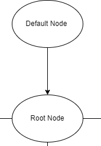
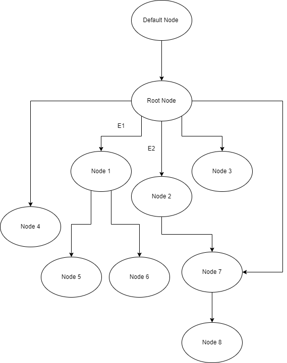

MIT License
Copyright (c) 2021 Jaseci Labs LLC
Permission is hereby granted, free of charge, to any person obtaining a copy of this software and associated documentation files (the "Software"), to deal in the Software without restriction, including without limitation the rights to use, copy, modify, merge, publish, distribute, sublicense, and/or sell copies of the Software, and to permit persons to whom the Software is furnished to do so, subject to the following conditions:
The above copyright notice and this permission notice shall be included in all copies or substantial portions of the Software.
THE SOFTWARE IS PROVIDED "AS IS", WITHOUT WARRANTY OF ANY KIND, EXPRESS OR IMPLIED, INCLUDING BUT NOT LIMITED TO THE WARRANTIES OF MERCHANTABILITY, FITNESS FOR A PARTICULAR PURPOSE AND NONINFRINGEMENT. IN NO EVENT SHALL THE AUTHORS OR COPYRIGHT HOLDERS BE LIABLE FOR ANY CLAIM, DAMAGES OR OTHER LIABILITY, WHETHER IN AN ACTION OF CONTRACT, TORT OR OTHERWISE, ARISING FROM, OUT OF OR IN CONNECTION WITH THE SOFTWARE OR THE USE OR OTHER DEALINGS IN THE SOFTWARE.
Jaseci Change / Release Notes
Version 1.3.4
Updates
- Deprecation: Stripe API soft removed.
- Improvement: Improved the deref operator
*to be more nimble - New Feature: Can now pluck lists of values from collections of nodes and edges.
- Major Language Feature: Introducing the
yeildfeature. See bible for details - Improvement/Bug: Here behavior is now specified for ability calls and inheritance in intuitive way
- Major Feature: Can now specify various forms of breadth first and depth first search on
takecommands (e.g.,take:bfs,take:dfs, andtake:bandtake:dfor short) - Improvement: Added deep copy for lists and dictionaries
- Improvement: The connect operator between 2 nodes now returns the left-hand side. (e.g.,
n1 --> n2 --> n3will create an intuitive chain of connections notn1 --> n3 <-- n2) - Bug Fix: Root nodes now return valid
.type - Bug Fix: With exit within walker now executes after exit events in nodes
Notes
- Behavior change for jac programs utilizing chained connection operators. Connection orders are now intuitive (e.g.,
n1 --> n2 --> n3will create an intuitive chain of connections notn1 --> n3 <-- n2) - API interface update:
sentinel_registerauto_run_ctx replaces ctx to be more specific,auto_gen_graphis nowauto_create_graphfor same reason as well - API interface update:
master_createAPI return format updated
Version 1.3.3
Updates
- Improvement: Added
reversedto set of list builtin functions - Bug Fix: Mem leak on graph node setting fixed
- Major Feature: Jsctl graph walking tooling
- Improvement: Optimized the self generation of jaseci internal APIs
- New Feature: Added
jasecistandard library as patch through to all jaseci core APIs - New Features: Report payloads can be customized with
report:custom - Improvement: Disengage can now do disengage with report action
- Improvement: import now works recursively through chain of files
- Improvement: JSCTL shows token on login
- Major Feature: JSCTL has persistent log in sessions, and can logout
- Improvement:
*and&precedence hierarch locations improved. - Bug Fix: Indirect node field updates tag elements to be written to db
- Major Feature: Multiple inheritance support on nodes and edges!
- Improvement: Fixed and much improved
actions load localfunctionality - Bug Fix: Globals imports of imports working
- Improvement: Sentinel registering improved to include ir mode
- Improvement:
edgesemantics improved - Major bug fix: Re registering new code was breaking architype abilities
- Improvement: Tests now only show stdout and stderr on a test by test basis in detailed mode (Much cleaner)
- Improvement: JSKit package architecture established, normalized, and standardized
- New Lang Feature: Added list built in call of
.l::max,.l::min,.l::idx_of_max, and.l::idx_of_min - Improvement: Api so super masters can
becomeany master id, also jsctl can issuemaster allusers - New Lang Feature: Can now have
canstatements in spawn graphs afterhas anchor rootname - Improvement:
actions load moduleadded as capability where module strings are accepted - New Feature: Added global root finder
net.rootto std lib andnet.minto go with existingnet.max - New Feature: New global element type and
globalkeyword
Notes
- Special report actions now use
:instead of.egreport.status = 200is nowreport:status = 200
Version 1.3.2
Updates
- New Feature: Introduction of new standard library option for loading actions in Jac with
std.actload_localandstd.actload_remote - Improvement: Disallowing spawning of unlinked edges, i.e.,
spawn --> node::genericnot allowed withouthere - New Feature: Random library adds random text generation lorem style with
rand.word(),rand.sentence(),rand.paragraph(), andrand.text(). - New Feature: Standard input
std.input(prompt):-p - Improvement: Status codes auto plucked from return payload in jsserv
- New Feature: Can now control status codes with
report.status = 201style statements - Improvement: No longer saves action data into graph and keeps it in architypes
- New Feature: Walkers can be called directly using
wapi/{walkername}api - New Feature: New
master_allusersAPI available for super master users - Improvement: Superusers now have access to all data
- Improvement: Jaseci's admin api route changed to
/js_admin/...vs/admin/to not conflict with Django's internals - Update: Django 3 upgraded to latest as well as all other dependencies.
- Fix: Believe it or not, I never fully implemented
continue. LIKE REALLY??? Anyway, fixed now. FTLOG! - New Feature: Added
jac dotcli command much likejac runbut prints dot graph - New Feature: Created shorthand for string, list, and dict functions i.e.,
.s::,.d::, and.l::respectively - New Feature: Added suite of dict manipulation functions
- New Feature: Added suite of list manipulation functions
Notes
- All api calls to Jaseci admin apis using the
/admin/route must be updated to/js_admin/
Version 1.3.1
Updates
- New Feature: File I/O Library in with json support
- New Lang Feature:
.str::load_jsonadded to string library - Fix: Error output when key not in object or dict
- New Lang Feature: Can now spawn root nodes in addition to generic nodes
- Improvement: Line numbers provided for all "Internal Errors"
- Fix: Dot strings now handled as expected (stripping quotes etc)
- Improvement: General improvements to error reporting
- Improvement: Changed meta requirement for actions to be option at hook points
- Improvement: Now you can arbitrarily chain array indexs into function calls as per
std.get_report()[0]. - New Feature:
std.get_reportgives the what is to be reported so far - Improvement: General polish items of JSCTL UI
- Improvement: Raised the default core logging reporting level to warning
Version 1.3
Updates
- Improvement: JSCTL now takes args without flags in sensible places for quality of life.
- Improvement: Better Error reporting all around
- New Feature: APIs for manipulating actions
- New Feature: Hotloading jaseci action modules
- Update: New action creation methodology and architecture
- New Feature: Decorator interface for creating jaseci action modules
- New Feature: New profiling flag added to run walker api for performance profiling
- New Feature: Direct jac file building, test, and run from in JSCTL
- New Language Feature: Tests and testing features as first order language semantics
- New Lang Feature: Asserts!
- Fix: Simplified and optimized global abilities
- New Support Feature: Started vs code for JAC extension first beta
- New Lang Feature: Multifile codebase support and import keyword and semantic added
- New Lang Feature: Try-else blocks introduced for exception handling
- New Lang Feature: Added new
&reference and*dereference semantic for getting psuedo-pointers to node, edges, etc - New Lang Feature: Massively expanded functionality with destroy and list slice management
- New Lang Feature: can now explicitly reference and dereference graph elements (nodes, edges, etc)
- New Lang Feature: Field filtering for dictionaries, particularly useful for context, info, details
- New Lang Feature: Type checking primitives, and type casting primitives
- New Lang Feature: String library finally present
Notes
- Various flags are now args for
jsctli.e.,walker run -name initis nowwalker run initas name is now the standard arg. If you wanted to specify a node the flag would be used as perwalker run init -nd {uuid} - Reports back from walker is now dictionary of form
{'report': list(report)}instead of currnetlist(report) std.sort_by_coltweaked to make last paramter a boolean for reverse (instead of string)- Format of
walker get -mode keyapi changed from {key:namespace} to {namespace:key} testis now a keyword with added test capabilities in jaseci- Type, int, float, str, list, dict, bool, are now keywords, if you used these as variable names in legacy code, must make updates.
- The destroy built-in is totally revised
lst.destroy(idx)on lists should be changed todestroy lst[idx]. - Get_uuid standard library function is deprecated since we have string manipulation
- Internal representation of element now
jac:uuid:format, should not be visible to coder,&references still produceurn:uuid:as strings. To dereference use new*dereference operators. - Standard, output and logging now will print proper values (e.g. json values for null, true, and false)
Version 1.2.2
Updates
- New Language Feature: can now perform assignments arbitrarily (not just to named variables)
- New Language Feature: can spawn assign on creation of nodes and edges
- New Language Feature: can filter references to nodes and edges
- Added new built-ins for nodes and edges (context, info, and details)
- Fixed dot output
- Added reset command to jsctl to clear complete state
- Various language grammar tweaks
Version 1.2.1
Updates
- Both jaseci and jaseci_serv are architected to be standalone packages
- Stripe API integrated
- EMails can be templated with HTML content
- Token expiry time can be set as config through live api
- Added auto sync to global sentinel for spawned walkers
- FIX: Global sentinels cascade to all users on change
- FIX: Multi pod concurrency issue corrected
Version 1.2.0
Updates
- New Hierarchal user creation and management through core Jaseci
- New version labels for Jac programs
- New custom action for nodes and edges
- New Jaseci server support for new API and Jaseci architecture
- New namespaces for public walker permissions management with key access
- New object sharing across users and access control APIs
- New Jaseci object permissions architecture
- New Jac library for outbound requests
- New Globals Jac standard library and API interfaces
- New support for server-side Jac deployments and relevant APIs
- New Jac language updates
- New access language features for edge manipulation and traversal
- New code IR format and handling across Architypes and Walkers
- New dot integration redesign
- New added editor to JSCTL
- New complete API redesign and deprecation of legacy APIs
- New introduced new standard Jaseci Bible (unfinished)
- New redesigned graphs nodes and edges to support multi-graph semantic.
Contributing to the Jaseci Open Source Project
- How to start contributing
- How to contribute code
- What is a Pull Request (PR)?
- How to open a PR and contribute code to Jaseci Open Source
- 1. Forking the Jaseci Repository
- 2. Cloning the Forked Repository Locally
- 3. Update your Forked Repository
- 4. Implement your code contribution on a feature branch
- 5. Push changes to your forked repository on GitHub
- 6. Opening the Pull Request on Jaseci Open Source
- 8. Merging your PR and the final steps of your contribution
- Things to know about creating a PR
- How to Update the Official Documentation
How to start contributing
Welcome to Jaseci! To start contributing, we would like you to start with issues.
Working on a new feature or fixing a bug you found
If you would like to add a new feature or fix a bug you have found, we prefer that you open a new issue in the Github repo before creating a pull request.
It’s important to note that when opening an issue, you should first do a quick search of existing issues to make sure your suggestion hasn’t already been added as an issue. If your issue doesn’t already exist, and you’re ready to create a new one, make sure to state what you would like to implement, improve or bugfix.
Work on an existing issue
If you want to contribute code, but don't know what to work on, check out the existing list of issues
Certain issues are marked with the "good first issue" label. These are issues that we think are great for first time contributor to work on while they are still getting familarized with the Jaseci codebase.
To work on an existing issue, go to the issue in Github, add a comment stating you would like to work on it and include any solutions you may already have in mind. Assign the issue to yourself.
The Jaseci team will then work with you on the issue and the downstream pull request to guide you through merging your code into the Jaseci codebase.
How to contribute code
Code contribution will be in the form of Pull Request (PR) on Github.
What is a Pull Request (PR)?
This is how the GitHub team defines a PR:
“Pull requests let you tell others about changes you’ve pushed to a branch in a repository on GitHub. Once a pull request is opened, you can discuss and review the potential changes with collaborators and add follow-up commits before your changes are merged into the base branch.”
This process is used by both Jaseci team members and Jaseci contributors to make changes and improvements.
How to open a PR and contribute code to Jaseci Open Source
1. Forking the Jaseci Repository
Head to Jaseci repository and click ‘Fork’. Forking a repository creates you a copy of the project which you can edit and use to propose changes to the original project.
Once you fork it, a copy of the Jaseci repository will appear inside your GitHub repository list, under your username.
2. Cloning the Forked Repository Locally
To make changes to your copy of the Jaseci repository, clone the repository on your local machine. To do that, run the following command in your terminal:
git clone https://github.com/your_github_username/jaseci.git
Note: this assumes you have git installed on your local machine. If not, check out the following guide to learn how to install it.
3. Update your Forked Repository
Before you make any changes to your cloned repository, make sure you have the latest version of the original Jaseci repository. To do that, run the following commands in your terminal:
cd jaseci
git remote add upstream https://github.com/Jaseci-Labs/jaseci.git
git pull upstream main
This will update the local copy of the Jaseci repository to the latest version.
4. Implement your code contribution on a feature branch
We recommend you to add your code contribution to a new branch (different from main). Then you can continuously run the previous step to always keep the main branch in your forked repo up-to-date with the original repo. This way you have the flexibility to easily inspect your changes and resolve any potential merge conflicts all within the forked repo.
git checkout -b name-of-your-new-branch
5. Push changes to your forked repository on GitHub
Once you are happy with the changes you made in the local files, push them to the forked repository on GitHub. To do that, run the following commands:
git add .
git commit -m ‘fixed a bug’
git push origin name-of-your-new-branch
This will create a new branch on your forked Jaseci repository, and now you’re ready to create a Pull Request with your proposed changes!
6. Opening the Pull Request on Jaseci Open Source
Head to the forked repository and click on a Compare & pull request button.
This will open a window where you can choose the repository and branch you would like to propose your changes to, as well as specific details of your contribution. In the top panel menu choose the following details:
- Base repository:
Jaseci-Labs/jaseci - Base branch:
main - Head repository:
your-github-username/jaseci - Head branch:
name-of-your-new-branch
Next, make sure to update the pull request card with as many details about your contribution as possible. Proposed changes section should contain the details of what has been fixed/implemented, and Status should reflect the status of your contributions. Any reasonable change (not like a typo) should include a changelog entry, a bug fix should have a test, a new feature should have documentation, etc.
Once you are happy with everything, click the Create pull request button. This will create a Pull Request with your proposed changes.
If you are ready to get feedback on your contribution from the Jaseci team, leave a comment on the PR.
8. Merging your PR and the final steps of your contribution
A member from the Jaseci team will review your PR and might ask you to make additional changes and update. To update your PR, head back to the local copy of your repo, implement the changes requested and repeat the same steps above. Your PR will automatically be updated with your latest changes. Once you've implemented all of the suggested changes, tag the person who first reviewed your PR in a comment of the PR to ask them to review again.
Finally, if your contribution is accepted, one of the Jaseci team member will merge it to the codebase!
Things to know about creating a PR
Opening issues before PRs
Like, mentioned above, We recommend opening an issue before a pull request if there isn’t already an issue for the problem you’d like to solve. This helps facilitate discussions and tracking progress.
Draft/Work-in-progress(WIP) PRs
If you're ready to get some quick initial feedback from the Jaseci team, you can create a draft pull request. You can prefix the PR title with [WIP] to indicate this is still work in progres.
Validate your changes through test
Jaseci has a set of automated tests and PRs are required to pass these tests for them to be merge into the main branch. So we recommend you to validate your changes via these tests before creating a PR. Checkout scripts/script_sync_code_kube_test to see how to run the tests.
Code style & Linting
To standardize coding style, Jaseci code is enforeced by the flake8 linter and a set of linting rules. Please run the linting command to check your code style before creating a PR.
flake8 --exclude=settings.py,*migrations*,jac_parse --max-line-length=88 --extend-ignore = E203,
How to Update the Official Documentation
The source of the Jaseci Official Documentation comes from the collection of README.md files placed in specific folders throughout the codebase. Developers and Maintainers must ensure that their contributions are properly documented according to the following procedures outlined in this section.
Adding a new module or library
Ensure that you follow the prevailing directory sturcture convention when adding a new module or library to Jaseci.
- All source files belonging to your module or library must be contained within a folder bearing the non-whitespace, lowercase name of your module or library.
- You must author a
README.mddocument to describe the purpose of your module or library, any features, configurations or uses as well as code excerpts on how to implement your module's functionaliy. - The
README.mdmust be included in the root folder of the module or library. - Ensure you update the related
README.mdin the subsection (if applicable) which contains your module, e.g.jaseci_kit/README.mdas well as the mainREADME.mdin the root directory of the codebase to include references to your new module or library.
Adding a new code lab example
All codelabs are organized within the /examples folder. You may add new codelabs to this folder by following the prescribed guidelines below:
- Ensure that your codelab is organized within its own named folder. Ensure you use all lowercase, non-whitespace names.
- Ensure your new codelab has its own
README.mdfile placed in its root folder. This should be the main page of the documented codelab. - If any images are used, ensure they are stored in the
[your_code_lab]/assetsfolder and referenced using relative paths. - Once the codelab is added, ensure that you update the main
README.mdin the root directory of the codebase to include references to your new codelab under the section "Samples and Tutorials".
Adding a new guide
All informational content which do not directly refer to modules / libraries or codelabs are typically stored under the /support/guide folder.
- Ensure that your new guide is contained within its own named folder. Ensure you use all lowercase, non-whitespace names.
- If any images are used, ensure they are stored in the
[your_guide]/assetsfolder and referenced using relative paths. - The markdown pages of your guide must be named based on the title of the rendered page in lowercase, non-whitepsace characters, e.g.
this_is_my_guide.md. - Once the guide is added, ensure that you update the main
README.mdin the root directory of the codebase to include references to your new guide under the applicable section.
Contributors
Here is a list of the contributors who have helped create and improve Jaseci. Big shout-out to them!
- Jason Mars (marsninja)
- Yiping Kang (ypkang)
- Ashish Mahendra (AshishMahendra)
- Timothy Shiwprasad (king-mango)
- Gimel Dick (Gim3l)
- Chavez Harris (codedbychavez)
- Ashish Agrawal (ashagraw91)
- Satyam Singh (SatyamRajawat)
- Alexie Madolid (amadolid)
- Brian Yang (BrianLifeLogify)
- Gorgeous-Patrick
- Shawn Jemmott (Shawn-Jemmott)
- azealin
- pathakshyam
- dominicbraam
- Christopher Clarke (ChrisIsKing)
- Eldon Marks (eldonm)
If you feel you're missing from this list, feel free to add yourself in a PR.
Jaseci Overview
What is Jaseci?
Jaseci is an end-to-end open-source and Open Computational Model, Technology Stack, and Methodology for bleeding edge AI. It enables developers to rapidly build robust products with sophisticated AI capabilities at scale.
Why Jaseci?
- Jaseci brings application development, AI Models and code infrastructure together under a single solution stack.
- Jaseci comes with pre-built, pre-trained AI models for most AI Related tasks out of the box.
- Using the JAC Programming language you are able to leverage all the goodness that Jaseci has to offer such as wielding powerful AI models and exposing complex business logic via automatically generated APIs.
- The integrated Jaseci Diffuse Runtime System handles the orchestration, configuration and optimization of the full cloud compute stack and inter-machine resources such as container formation, scaling and optimization. In essence it provides all the technology needed to develop an AI application in one platform.
- Jaseci allows you to remove data management from your workflow with a baked-in data persistence layer.
- Jaseci was desgined to reduce development team specializations. You'll only need a single Jaseci Engineer to do the work of DevOps Engineers, Frontend and Backend engineers and AI engineers.
- With Jaseci's graph-based representation of data and operations, you'll be able to visualize your solutions and navigate complexity with ease.
- Develop rapidly with Jaseci's level of abstraction and automatically generated APIs.
- You get to focus focus on building your solution instead of reinventing the wheel.
Installing Jaseci
Installing on Windows
Software Requirements
- Ubuntu 20+
- python 2.8 +
- pip package manager
To run commands for Jaseci we need a terminal that accepts bash arguments. We recommend using the Ubuntu terminal that comes as the default with WSL.
- Check if WSL is installed by running the following the Windows powershell terminal :
python wsl -l -v
This will return the flavour of the distribution used for WSL. The version column will show the version of WSL.
- If no version is specified open windows powershell in adminstrator mode and install WSL by running :
wsl --install
- Restart your Computer
4.Open the Ubuntu terminal. for more information on installation see here.
Install Python and Pip packet Manager
- Check version of Python and Pip by running :
python3 --version
pip3 --version
If these packages are installed they will return a version number. Move to step 7 if a version number is present.
6.Install Python3 and pip3 by running the following:
sudo apt update
sudo apt install python3-dev python3-pip
7.Once the Python and pip packages are installed. Now to install Jaseci and Jaseci Kit
pip install jaseci
pip install jaseci-kit
- To ensure our installation is working run :
jsctl
Once it shows a list of options and commands, you're installation is complete
Installing on Mac
Install Python and Pip packet Manager
- Check the version of Python and Pip by running :
python3 --version
pip3 --version
If these packages are installed they will return a version number. Move to step x if a version number is present.
6.Install Python3 and pip3 by running the following:
brew update
brew install python
7.Once the Python and pip packages are installed. Now to install Jaseci and Jaseci Kit
pip install jaseci
pip install jaseci-kit
- To ensure our installation is working run :
jsctl
Once it shows a list of options and commands, you're installation is complete.
Linux Installation
Install Python and Pip packet Manager
- Check the version of Python and Pip by running :
python3 --version
pip3 --version
If these packages are installed they will return a version number. Move to step x if a version number is present.
6.Install Python3 and pip3 by running the following:
sudo apt update
sudo apt install python3-dev python3-pip
7.Once the Python and pip packages are installed. Now to install Jaseci and Jaseci Kit
pip install jaseci
pip install jaseci-kit
- To ensure our installation is working run :
jsctl
Once it shows a list of options and commands, your installation is complete.
Setting up your Code Editor
Visual Studio code is a popular IDE used by developers of all operating systems. This IDE comes with a Jac extension to aid in your coding Journey.
-
If you already have VS code installed move to step 3. Download Visual Studio code by selecting here
-
Once download is completed . Open and follow the installation instructions.
-
Once Installation is completed open VS code and install the JAC extension.
-
Go to View > Command Palette . Type Install and select extensions.
-
search JAC and select it then install.
Writing your first app
Let's create a simple conversational Agent using Jaseci and Jaseci Kit. We're gonna create a Chatbot for students to sign up for Jaseci Dojo !
Before we begin ensure you have Jaseci and Jaseci Kit installed. If not, see the Installation here
Create a file called graph.jac. Here we are going to create the conversational flow for the chatbot .
# state is the name of the node
node state {
has title;
has message;
has prompts;
}
Nodes can be thought of as the representation of an entity. Nodes are the fundamental unit of a gaph. These can be considered to be the steps in which the Walker can take.
- Nodes are composed of Context and excutable actions.
- Nodes execute a set of actions upon entry and exit.
Here we are creating a
nodeof name "state" The has keyword is used to declare a variable of the node.
# state is the name of this node
node state {
has title;
has message;
has prompts;
}
# transition is the name of this edge
edge transition {
has intent;
}
Edges are the link between nodes. They walker will use these edges to determine the next node to traverse to. The has key word is used to declare the variable "intent". This "intent" is what the Walker will use to to determine which node to go to next.
# state is the name of this node
node state {
has title;
has message;
has prompts;
}
# transition is the name of this edge
edge transition {
has intent;
}
# main_graph is name of the graph
graph main_graph {
has anchor main_root
The graph is a collection of initialized nodes.
The has anchor key word is used to identify the root node. The Root node is the node where the walker's traversal begins.
The has anchor key word is used to state the root node. The Root node is the node where the walker's traversal begins.
# state is the name of this node
node state {
has title;
has message;
has prompts;
}
edge transition {
has intent;
}
graph main_graph {
has anchor main_root
spawn {
# this is the first node in the graph.
main_root = spawn node::state(
title = "Welcome",
message = "Welcome to Jaseci Dojo, how can i help?",
prompts = ["class","times","prices","quit"]
);
# this creates a node that goes from main_root to class.
prices = spawn main_root -[transition(intent="prices")] -> node::state(
title = "prices",
message = "Prices Vary based on age",
prompts = ["12 and younger", "18 and younger" ,"Older than 18", "quit"]
);
# this creates a node from the prices node to here.
prices_12 = spawn prices -[transition(intent="12 and younger")] -> node::state(
title = "prices<12",
message = "Childer under 12 pay $100 per month",
prompts = ["more prices", "quit"]
);
# this create an edge from prices_12 back to prices.
prices_12 -[transition(intent="more prices")] -> prices;
}
spawn is used to create to create child nodes, which is used to design flow of the conversational experience.
We are able to create additional edges to connnect nodes which which do not share a parent -child relationship. This is shown in the last line.
node state {
has title;
has message;
has prompts;
}
edge transition {
has intent;
}
graph main_graph {
has anchor main_root;
spawn {
main_root = spawn node::state(
title = "Welcome",
message = "Welcome to Jaseci Dojo, how can i help?",
prompts = ["class","times","prices","quit"]
);
prices = spawn main_root -[transition(intent="prices")] -> node::state(
title = "prices",
message = "Prices Vary based on age",
prompts = ["12 and younger", "18 and younger" ,"Older than 18", "quit"]
);
prices_12 = spawn prices -[transition(intent="12 and younger")] -> node::state(
title = "prices<12",
message = "Childer under 12 pay $100 per month",
prompts = ["more prices", "quit"]
);
prices_12 -[transition(intent="more prices")] -> prices;
prices_18 = spawn prices -[transition(intent="18 and younger")] -> node::state(
title = "prices<18",
message = "Childer under 18 pay $110 per month",
prompts = ["more prices", "quit"]
);
prices_18 -[transition(intent="more prices")] -> prices;
pricesabove18 = spawn prices -[transition(intent="Older than 18")] -> node::state(
title = "pricesadults",
message = "Adults over 18 pay $150 per month",
prompts = ["more prices","quit"]
);
pricesabove18 -[transition(intent="more prices")] -> prices;
class = spawn main_root -[transition(intent="class")]-> node::state(
title = "class",
message = "There are 3 classes per week and you are required to attend a minimum of 2.",
prompts = ["time","days","prices","quit"]
);
time = spawn class -[transition(intent="time")]-> node::state(
title = "time",
message = "Classes are from 3 pm to 4 pm",
prompts = ["other times","days","quit"]
);
main_root -[transition(intent="times")] -> time;
other_time = spawn time -[transition(intent="other times")]-> node::state(
title = "Other times",
message ="The clases are at 4 pm to 5 pm but you need at least 4 other students to start",
prompts = ['days',"quit"]
);
days = spawn time -[transition(intent="days")]-> node::state(
title = "days",
message ="The classes are on Monday ,Wednesday , Friday",
prompts = ['time',"quit"]
);
other_time - [transition(intent="days")] -> days ;
days - [transition(intent="time")] -> time ;
}
}
This last code block we created several nodes and connected them together. To move from node to node we use the intent to sepcify which route to take.
Walker
- Walkers traverse the nodes of the graph triggering execution at the node level.
Now lets create a file called walker.jac Here is where we will create the method for traveral of the graph.
#here we initialize the walker which we named talker.
walker talker {
has utterance;
state {
#prints out the message and prompts variables for the node the walker is currently on
std.out(here.message,here.prompts);
#here we take the input from the terminal.
utterance = std.input("> ");
#if the user enters "quit" the programs ends.
if(utterance=="quit"): disengage;
#checks the utterance and determine which node to traverse too.
take -[transition(intent==utterance )] -> node::state else{
take here ;
}
}
}
The Walker will start from the main root and from the utterance intered it will determine which node to go to next. It should be noted the utterance must match the prompts chosen or the walker will not move from the graph. Jaseci-kit has features that makes it possible for users to not enter the exact intent but still traverse to the right node.
Main
Create a file named main.jac .
# import the graph and walker made earlier.
import {*} with "./graph.jac";
import {*} with "./walker.jac";
# this walker is reponsible for starting the program.
walker init {
root {
#creates an instant of the graph
spawn here --> graph::main_graph;
#creates an instance of the walker, talker
spawn --> walker::talker;
}
}
Once we run main.jac we can use the Chatbot. Play around with graph and add your own nodes and link other nodes together to create an even better chatbot.
Understanding JAC Programs
JAC Programs are authored by the JAC language which is used to define structure and behaviour. Behaviour can be modeled in the form of actions and abilities within node elements of the graph as well as walker elements which are specifically designed to traverse the nodes and edges of a graph. Structure can be modeled by arranging a number of nodes and edges in a particular manner, compelte with state, to form a graph.
When a JAC program executes, the structural and behavioral definitions encoded in JAC are registered with the Jaseci Runtime Machine in the form of a Sentinel. Named Walkers may then be launched on a graph via an API call.
Walkers may be designed to report their output. Reports come back via API once a walker has completed its walk, these reports will be a json payload of objects.
Graphs comprise nodes and edges. Nodes have abilities that can be activated when a walker travers on it. The Walker traverse the graph and decides which paths to take by using the edges.
All traversal begins at the Init or default node. This init node will connect to the main root of our graph.

The Walkers are initialized and added on the root node and from there they begin traveral. The walkers decide which node to travel to based on which edge satisfies it's intent. The intent being a criteria meet by the edge.

The Walker can move from node to node along edges. It can also be spawned directly on any node without the need for a traversal
An Overview of the JAC Language
JAC is the official programming language of Jaseci, specifically designed for developers to author the computational logic which governs the various Jaseci constructs such as libraries, walkers, nodes, edges and graphs. Syntactically, JAC draws from JavaScript and Python but it brings a variety of graph-based operators and expressions that go with the unique development paradigm of Jaseci.
To get acquainted with JAC, you'll first have to understand its various constructs which are governed by the language. Here's an overview of the Jaseci constructs and related terms:
Action
- Actions are computational processing elements.
- Actions take in a list of context items as input and outputs one or many context items.
- All possible actions are provided by Jaseci.
- Actions attached to nodes, edges, etc will search walker, itself, then higher dimentional nodes for input contexts in that order,
Context
- Context is a list of one or more key-value pairs.
Nodes and HD Graph Domains and Planes
- Nodes are composed of context and executable actions.
- Nodes accumulate context via a push function, context can be read as well.
- Nodes execute a set of actions upon:
- Entry
- Exit
- Activity actions in a node denote actions that a walker can call at any time
- Nodes must be aware of the set of HDGDs of which it is a member.
- Nodes must trigger processing of HDGDs of which it is a member upon events.
- Seperate actions at the HDGDs above can occur on entry and exit events
- At the first dimension, these are essentially subsets of nodes for which there are common traits. Traits can include context both static and dynamic (built over time) or actions to be executed upon []
- entry from some edge into the domain from another domain at the given dimensionality,
- edge traversals within a domain, or
- exits out of the domain to antoher domain at the domains given dimensionality.
- At higher dimensions, these HDGDs are comprised of HDGDs of the next dimension down and function similarly with the element case but instead of nodes they comprise of HDGDs. (HDGD_2 is a graph comprised of HDGD_1 graphs)
- Transitions at a given dimension can only occur between domains of that dimension or to non-domain nodes.
- HDGDs can overlap at a given dimension.
- Each domain at any dimensionality has a root node.
- Transitions at the node level trigger computation in parallel at all dimensions of HDGDs for which that node is a member of.
- Optional:
- Upon creation of an edge between nodes that is first to span HDGD bounderies at any dimensionality, an edge is created implicity betwen HDGDs at that dimensionality (these edges function exactly like edges between nodes). At this point the edges can carry context and actions.
- Upon deletion of an edge between nodes that is the last to span HDGD bounderies at any dimensionality, the edge that was created connecting those HDGDs is deleted.
- Nodes have an anchor context value that is used to represent the 'value' of the node, for example when deciding which outbound node a walker should take based on some evaluation. Each node can select only one element from context to be it's anchor
Edges
- Edges are composed of context and executable actions
- Edges accumulate context via a push function, context can be read as well
- Edges execute a set of actions when traversed.
- Edges much be aware of the set of HDGDs of which it is a member.
- Edges crossing HDGD boundaries must trigger higher order HDGD plane edges.
Walkers
- Walkers walk nodes triggering execution at the node level and HDGD levels.
- Walkers can pick up context as they traverse.
- Walkers also decide which node to travel through next and records the path of travel (trail) to be recorded within it's own context.
- Walkers can be spawned at any node.
- Walkers can spawn other walkers.
- Computation happens at the Node and HDGD levels. However walkers make decisions on where to walk next and which context to pick up.
- Walker context must be preloaded by sentinel or applications as a form of input and configuration for the walk
- Walkers can carry with them their own actions and contexts that is executed whenever specified in the walkers own code
Sentinels
- Sentinels watch walkers, aggregate outcomes of walking, and enact policies.
- Each walker must have a sentinel and the division of labor is
- Walkers are concerned primarily for walking the graph.
- Sentinels will take the results of one or more walkers to perform some higher order objective (i.e., resolution)
- Keeps context that can be used to save derivitave application behavior.
- Sentials harbor walkers, architype and jac programs that encode walkers and architypes
- Sentials can 'register' Jac programs which is a sort of compile that will generate architypes and walkers
- If the program has syntax errors registration fails, once registered walkers fail at runtime
Architypes
- Registers templatized version of instances of any Jaseci abstractions or collections of instances (e.g., subgraphs, etc)
Graph
- A graph is a root node (inhereted from node) and manages sentinels, and higher dimentional nodes
Masters
- This is the center of management of a jaseci instance that orchestrates the manipulation of graphs
JAC Grammar
program : element*
element : architype
: walker
architype : KW:NODE (COLON INT)? ID LBRACE attr_stmts RBRACE
: KW:EDGE ID LBRACE attr_stmts RBRACE
walker : KW:WALKER ID code_block
statements : statement*
statement : architype
: walker
: code_block
: node_code
: expression SEMI
: if_stmt
: for_stmt
: while_stmt
code_block : LBRACE statements RBRACE
: COLON statement SEMI
node_code : dotted_name code_block
expression : dotted_name EQ expression
: compare (KW:AND|KW:OR compare)*
if_stmt : KW:IF expr code_block (elif_stmt)* (else_stmt)*
for_stmt : KW:FOR expression KW:TO experssion KY:BY expression code_block
while_stmt : KW:WHILE expression code_block
attr_stmts : attr_stmt*
dotted_name : ID (DOT ID)*
compare : NOT compare
: arithmetic ((EE|LT|GT|LTE|GTE) arithmetic)*
attr_stmt : KW:HAS ID (, ID)* SEMI
: KW:CAN dotted_name (, dotted_name)* SEMI
: arch_set SEMI
arch_set : KW:NAME EQ expression
: KW:KIND EQ expression
arithmetic : term ((PLUS|MINUS) term)*
term : factor ((MUL|DIV) factor)*
factor : (PLUS|MINUS) factor
: power
power : func_call (POW factor)*
func_call : atom (LPAREN (expression (COMMA expression)*)? RPAREN)?
atom : INT|FLOAT|STRING
: dotted_name (LSQUARE expression RSQUARE)*
: LPAREN expr RPAREN
: listkeywords
Operators
Arthimetic
// addition
a = 4 + 4;
e = a + b + c + d;
// multiplication
b = 4 * -5;
// division
c = 4 / 4; # Returns a floating point number
// subtraction
d = 4 - 6;
// exponent / power
a = 4 ^ 4;
// modulus
b = 9 % 5
Equality
// equal
a == b
// not equal
a != b
// less than
a < b
// greater than
a > b
// less than and equal to
a <= b
// greater than and equal to
a >= b
Logical
// not
!a,
// and
a && b
a and b
// or
a || b
a or b
// mixture
!a or b
!(a and b)
Assigments
a = 4 + 4;
a += 4 + 4;
a -= 4 * -5;
a *= 4 / 4;
a /= 4 - 6;
Control Flow
Select Statement
# simple If statement
walker init {
x = 3.56;
y = "X is not equal to 3.45";
if (x ==3.45) {
std.out(x);
}
elif (x==3.56){
std.out("it's a match");
}
else {
std.out(y);
}
}
Other Conditional statements like < , > ,!= , "and" and "or" are also supported.
For and While loop
Loops are written similiar to python it run a specific amount of time as in the case of the "For" loop or until a condition is meet as in the case for the "While" loop.
walker init {
# the for loop
for i=0 to i<10 by i+=1:
std.out(i)
#the while loop
while(x<10){
std.out(x);
x = x +1;
}
}
Collections
Collection refers to dictionary , lists ...
Dictionary
dict = {
'name' : 'John',
'height_in_ft' : 6.8,
'employed' : True
} ;
List
AI_modesl = ['use_qa','use_enc','bi_enc'];
Nodes
Nodes are the building blocks of any JAC program. Nodes are the destinations of Walkers. Nodes have abilities which are similar to functions in python. These abilities can be triggered when walkers traverse on to or leave the Node or even triggered by the Walker if needed. Nodes can be created to serve different functions. All Nodes are linked together in a graph by edges.
A node is a representation of an entity.
- Nodes are composed of Context and excetuable actions.
- Nodes accumulate context via a push function, context can be read ass well
- Nodes can execute a set of actions upon entry and exit.
Defining Node Attributes
Attributes are variables within the node.
node [name of node]{
# to declare an attribute we uses the [has] keyword followed by the attribute name.
has variable;
# to use a module from jaseci kit
can use_qa;
}
Adding abilities
Functions in JAC are avalibale to Nodes only. They are called Abilities instead of Functions.These abilities can be activated when a walker travers over a node . Abilities can be triggered when a Walker first traverse over a node , leaves a node , triggered by the walker or when a specific walker enter or leaves a node.
Abilities in nodes can be declared as followed:
node state {
# any walker can use ability
can ability6 {
# execute some code
}
# Walker enters a node
can ability entry {
#execute some code.
}
# Walker exits a node
can ability2 exit {
# execute some code
}
# specific walker enters
can ability3 with walker1 entry {
# execute some code
}
# specific walker exits
can ability4 walker1 exits {
}
# only specifc walker can use ability
can ability5 walker2 {
# code to execute
}
}
Inheritance on Nodes
Nodes can inherit abilities and attributes of other nodes.
# parent node
node state {
has title;
has message;
has prompts;
}
# inherits attributes from state node.
node input_state:state {
has input;
}
# inherits attributes from input_state.
node output_state :input:state{
has output;
}
Edges
Edges are the links that connect nodes to each other
- Edges associate one node with another by way of a uni-directional or bidirectional path definition.
- Edges are composed of context and executable actions.
- Edges accumulate context via a push function, context can be read as well.
- Edges execute a set of actions when traversed.
- Edges much be aware of the set of HDGDs of which it is a member.
- Edges crossing HDGD boundaries must trigger higher order HDGD plane edges.
edge [name of edge] {
has variable;
}
Linking Nodes together with an Edge
node state {
has context;
}
edge transition {
has intent ;
}
graph main {
has anchor main_root ;
# create nodes here with the edges linking them.
spawn {
main_root = spawn node:: state(context="main node");
# create node that connects to main_root
node_one = spawn main_root -[transition(intent="one")] -> node::state(context="node one");
# connect node that connects to node_one
node_two = spawn node_one -[transition(intent="two")] -> node::state(context="node two");
}
}
Inheritance on Edges
Edges can inherit abilities and attributes of other edges.
# parent edge
edge transition {
has transition_next ;
}
# child edge
edge transition_back: transition {
has prev_step ;
}
Graphs
- Graphs are an arrangement of nodes and edges
graph [name of graph] {
this is the root node of the graph
has anchor [name of anchor];
#here is where we start to connect nodes with edges creating a graph.
spawn{
# declare your nodes in here
}
}
Walkers
- Walkers traverse nodes triggering execution at the node level.
- Walkers have the ability to pick upand retain context, which can be taken across nodes.
- Walkers also decides which node to travel to through next and records the path of travel to b recorded within it's own context.
- Walkers can be spawned at any node
- Walker can spawn other walkers.
- Walkers can carry with them their own actions and contexts that is executed whenever specified in the walkers own code
Defining a Walker
walker [name_of_walker]{
}
Defining specific node code to execute When defining a walker, you also write specific code blocks that will only execute when the walker is on a specific node.
walker [name_of_walker]{
[Any code here is executed regardless of the node the walker is on]
...
...
person{
[Any code within this block will only be executed when the walker is on a person node]
}
...
family{
[Any code within this block will only be executed when the walker is on a family node]
}
}
More on Behaivour with Abilities
With Entry and Exit
When defining a walker, you also have the ability to write specific code blocks that execute if and only if a walker enters or exists a node. Any code within the with_entry block is the first thing that executes as soon as a walker enter a node. And the opposite is true for with_exit, triggering only when the walker is about to leave a node.
walker [name_of_walker]{
with entry{
[code to execute when a walker first enters a node]
}
...
...
with exit{
[code to execute when a walker is about to leave a node]
}
}
Traversing a Graph
- Take is used for nodes/Edge trversal in a walker
- Only until all other walker logic is executed, then all queued up take operations are executed.
- An operation would tell the walker to move/traverse on to the next node with the given filter provided when using take.
- When using the take command, you have the ability to filter by edges or edges that have a specific node attached.
Consider the following diagram

The take command performs a breath first search to add take operations to the queue. Let's define a walker that traverses the various nodes and prints the node data. We'll assume this walker spawns and starts from the root node 0.
Traversing to a generic node from a walker
// generic definition of the nodes. Nodes of type 'myNode' will have a 'data' property
node myNode: has anchor data;
walker myWalker{
myNode{
take -->;
std.out(here.data);
}
}
With the assumption that this walker starts from node 0, this is how the take operations are queued and executed.

Upon spawning, the walker executes whatever logic it has to when on node of type myNode and in the logic of the above code snippet, the walker executes a take operation then prints the node data.
However, due to the way the take command works, the data is first printed before any traversal occurs. This is becasue the take command is asynchronous and doesn't execute right away. Instead, it queues up any traversal that needs to occur, executes any logic that come after the take command and once that is complete, dequeues and executes the next operation, which would be the traversal to node1.

At node 1 the walker executes a similar logic, queuing up nodes 3 and 4 then printing the value of node 1 before any traversal. Once that logic is finished, it checks the end of the queue for the next operation, which in this case would be traversal to node 2.

This process continues until the queue is empty or the walker is killed.
Basic traversal using take
walker testWalker{
node_type{
take -->;
}
}
walker testWalker2{
node_type{
take <--;
}
}
Traversing to a specific type of node from a walker
walker testWalker{
node_type{
take --> node::node_type;
}
}
//node of type person as the filter
walker testWalker2{
school{
take --> node::person;
}
}
Take also allows the use of an else statement, should there be no edges with the filter specified in the take command.
Executing alternative logic should there be no edges with the take filter
walker testWalker{
node_type{
take [some filter] else {
// some additional logic if edge of filter not found
}
}
}
//traverse to friend edge, else print 'no friends found'
walker testWalker2{
person{
take -[friend]-> else{;
std.out('no friends found');
}
}
}
Referencing a Node in Context
The here keyword is used reference the node the walker is currently on.
walker talker {
has utterance;
state {
#the message and prompts attribute of the current node will be printed
std.out(here.message, here.prompts);
utterance = std.input("> ");
if(utterance == "quit"): disengage;
take -[transition(intent == utterance)]-> node::state else {
take here;
}
}
}
The visitor keyword is used to reference attributes of the walker from the node it is currently on.
node state{
has prev_value;
can getvalue with talker entry {
here.prev_value = visitor.value;
std.out(here.prev_value);
}
}
Passing Arguments
You can pass arguments to walkers , Nodes and Edges, in a similar way as passing arguments to functions in python.
Passing Arguments to Walkers
walker talker {
has name;
has value;
}
spawn::talker(name="Jaseci" ,value = 10);
Passing Arguments to Nodes
node::calculator(first_number, second_number);
Passing arguments to Edges
# edge named transittion with argument orperation
[transition(operation)]-> node ;
Specifying Operating Context
Several types Of Nodes can be created and each can have several unique abilities. The abilities of specific nodes can be activated when a walkers traverese on to it . This can be done by specifying an operating context. This allows a walker to execute any of the nodes ability that it is currently on. The operating context of each type of node must be specified for it to be used.
node state {
has title;
has message;
has prompts;
}
node input_state:state {
has input;
}
node closing_state:state;
edge transition {
has intent;
}
walker talker {
state, input_state{
#execute code specific to the state and input_state nodes
input_state{
#These operating context can be embedded within other operating context.
}
}
closing_state{
#execute code specific to closing_state nodes
}
}
Actions in Jaseci
- Actions are computational processing elements.
- Actions take in a list of context items as input and outputs one or many context items.
- All possible actions are provided by Jaseci.
- Actions attached to nodes, edges, etc will search walker, itself, then higher dimentional nodes for input contexts in that order.
Date Actions
Jaseci has it's own set of built-in Date Functions
Quantize to Year
#take a standard python datetime string and extract the year out of it accordingly
x = '2021-12-12';
z = date.quantize_to_year(x);
std.out(z);
Quantize to Month
#take a standard python datetime string and extract the month out of it accordingly
x = '2021-12-12';
z = date.quantize_to_month(x);
std.out(z);
Quantive to Week
#take a standard python datetime string and extract the month out of it accordingly
x = '2021-12-12';
z = date.quantize_to_week(x)
std.out(z);
Quantize to day
#take a standard python datetime string and extract the day out of it accordingly
x = '2021-12-12';
z = date.quantize_to_day(x);
std.out(z);
Date Difference
#t akes two datetime string and returns an integer that is the number of days in between the two given dates.
z = date.date_day_diff('2021-12-12','2022-12-12');
std.out(z);
File Actions
Load file to string
# Converts file to string , max_chars is set to none by default
Testfile = file.load_str(test.txt, max_chars = 1000)
Load Json file to dictionary
# Loads json from file to dictionary format
TestJson = file.load_json(test.json)
String to file
# dumps string in to file
test = "This is a test of the dump_str method
Testfile = file.dump_str("text.txt",test)
Append string to a file
# appending a string to a file.
test = "This is a another test but with the append_str method
Testfile = file.append_str(str, max_chars = 1000)
Create Json File
# dump dictionary in to json file
test = {
"name": "test",
"method" : "dump_json",
"use" : "dumps dictionary to json file"
}
Testfile = file.dump_json("text.json",test)
Delete file
#delete any file
file.delete("text.txt")
Net Actions
Max Anchor Value
# returns object (node,edge) with the highest anchor value
node year {
has_anchor year_num;
}
jacset = [year1,year2,year3];
value = net.max(jac_set)
Minimum Anchor Value
# returns object (node,edges) with the lowest anchor value
node year {
has_anchor year_num;
}
jacset = [year1,year2,year3];
value = net.min(jac_set)
Get Node Root
# returns root node of a given graph
node year {
has_anchor year_num;
}
jacset = [year1,year2,year3];
value = net.root(jac_set)
Rand Actions
Seeds random number generator
# seeds random num generator
rand.seed(4);
Generate random generator
# Generates random integer between range (0-10)
num = rand.integer(0, 10);
Random Selection
a_list = ['apple','mango','orange']
# Randomly selects and return item from list
num = rand.choice(a_list);
Generate Random Word
# generate a random word
wrd = rand.word();
Generate Random Sentence
# generates a random sentence
# min_lenght - optional , minimum amount of words defaut is 4
# max_lenght - optional , maximum amount of words default is 10
# sen - optional
senetence = rand.sentence();
Generate Random Paragraph
# generates a random paragraph
# min_lenght - optional , minimum amount of setences defaut is 4
# max_lenght - optional , maximum amount of sentences default is 8
# sen - optional
paragraph = rand.paragraph();
Generate Random Text
# generates a random text
# min_lenght - optional , minimum amount of paragraph ,defaut is 3
# max_lenght - optional , maximum amount of paragraph default is 6
# sen - optional
test = rand.text();
Generate time
# Generate a random datetime between range.
returned time = rand.time("2020-10-25", "2020-11-26);
Request Actions
Jaseci allows for in-code use of common request methods.
Get Request
# make get request
# url : string - url to where the request will be made
# data : dictionary - data being sent that will be converetd to json.
# header : dicionary - header data
response = request.get(url ,data , headers)
Post Request
# make post request
# url : string - url to where the request will be made
# data : dictionary - data being sent that will be converetd to json.
# header : dicionary - header data
response = request.post(url ,data , headers)
Put Request
# make put request
# url : string - url to where the request will be made
# data : dictionary - data being sent that will be converetd to json.
# header : dicionary - header data
response = request.put(url ,data , headers)
Delete Request
# make delete request
# url : string - url to where the request will be made
# data : dictionary - data being sent that will be converetd to json.
# header : dicionary - header data
response = request.delete(url ,data , headers)
Head Request
# make head request , returns header of a get request alone
# url : string - url to where the request will be made
# data : dictionary - data being sent that will be converetd to json.
# header : dicionary - header data
response = request.head(url ,data , headers)
Option Request
# make options request , requests permitted communications options fror a given url or server.
# url : string - url to where the request will be made
# data : dictionary - data being sent that will be converetd to json.
# header : dicionary - header data
response = request.get(url ,data , headers)
File upload
# used to upload a file or files
# url : string - url to where the request will be made
# file : single base64 encoded file
# files : list of base64 encode files.
# header : dicionary - header data
response = request.multipart_base64(url ,file , headers)
Download File
# url : string - url to where the request will be made
# header : dicionary - header data
# encoding : strign - file format , default is utf-8
downloaded_file = request.file_download_base64(url,header,encoding)
Standard Actions
Logging output
# printing output to log
data = {
"type" : "String",
"name" " "Jaseci"
}
result = std.log(data)
Output
data = {
"type" : "String",
"name" " "Jaseci"
}
# print on to the termnial
std.out(data)
Input
# takes input from the terminal
# any string passed will be printed on to the screen
std.input("> ")
Standar Error
# printing to standard error
std.eer()
Sort Columns
# Sorts in place list of lists by column
# Param 1 - list
# Param 2 - col number (optional)
# Param 3 - boolean as to whether things should be reversed (optional)
#Return - Sorted list
sorted_list = std.sort_by_col(param1,param2)
UTC time
# Get utc date time for now in iso format
time = std.time_now()
Set Global Variable
# set global varibale visible to all walker
# name : string
# value : value (must be json seriaziable)
global_variable = std.set_global(name,value);
Get Global Variable
# get global variable
# name : name of variable
global_variable = std.get_global(name);
Load local actions to Jaseci
# load local actions date to jaseci
action = std.actload_local("date.py");
Load remote actions to Jaseci
action = std.actload_remote(url)
Load module actions to Jaseci
#load use_qa model
action = std.actload_module('use_qa');
Destroy Global
global = std.destroy_global(name)
Set object Permission
element - target element
mode - valid permission (public, private, read_only)
object = std.set_perms(element,mode)
Get object Permission
#Returns object access mode for any Jaseci object
# object - target element
# Return - Sorted list
obj = std.get_perms(object);
Grant object Permission
# grants another user permission to access a jaseci object
# obj :target element
# element : master to be granted permission
# readonly : Boolean read-only flag
# Returns sorted list
object = std.grant_perms(obj,element,readonly)
Revoke Permission
# Remove permission for user to access a jaseci object
# obj : target element
# element : master to be revoke permission
# return sorted list
objects = std.revoke_perms(obj,element);
Get Report
# Get current report so far from walker run
reprt = std.get_report();
Vector Actions
Cosine Similarity
#Calculate the Cosine similarity score between 2 vectors.
# return float betweeen 0 and 1
# vectora :list
# vectorb : list
similarity = vector.cosine_sim(vectora, vectorb);
Dot Product
# Calculate the dot product between 2 vectors.
# return float betweeen 0 and 1
# vectora :list
# vectorb : list
dot_product = vector.dot_product(vectora,vectorb);
Centroid
# Calculate the centroid of the given list of vectors.
# list of vectors
# returns [centroid vectors , cluster tightness]
centroid = vector.get_centroid(vectors);
Softmax
# calculate the softmax value
# returns list
# vectors : dictionary
values = vectors.softmax(vectors);
Jaseci Actions
Alias
Alias provides names for long string like UUIDs.
Register Alias
#name (str): The name for the alias created by caller.
#value (str): The value for that name to map to (i.e., UUID)
response = jaseci.alias_register(name,value);
List Aliases
# List all string to string alias that caller can use
jaseci.alias_list()
Delete Alias
# Delete an active string to string alias mapping
# name (str): The name for the alias to be removed from caller.
jaseci.alias_delete()
Clear Alias
# Removes all aliases.
jaseci.alias_clear()
Objects
Get global Variable
# name: name of global variable
value = jaseci.global_get(name);
Object Details
# retuen detail of jaseci object
object : element - jaseci object
details = jaseci.object_get(object);
Object Access Mode
# Get the object access mode for any jaseci object.
# object : element - jaseci object
accessMode = jaseci.object_perms_set(object)
Set Object access mode
# valid perms = ["public", "private", "read_only"]
# object : element - jaseci object
# perm : string
jaseci.object_perms_set(element,perm);
Object access grant
# grants one object the acess to another object
# object : element - object to access
# master : element - object to gain access
rent = jaseci.object_perms_grant(element, master);
Revoke object access
#Remove permissions for user to access a Jaseci object
# object : element - object that was accessed
# master : element - object that has access.
ret = jaseci.object_perms_revoke(element,master);
Graphs
Create Graph
# Create a graph instance and return root node graph object
jaseci.graph_create()
Get Graph Content
# Return the content of the graph with mode
# Valid modes: {default, dot, }
# gph :graph - graph whose conten you need
# mode : string - "deafult" or "dot" , "default" by default
Contents = jaseci.graph_get(gph);
List Graph Objects
# Provide complete list of all graph objects (list of root node objects)
# detailed : boolean - if eac graph details are wanted
graph_info = jaseci.graph_list(detailed);
Set Default Graph
# set the default graph master should use
# gph : graph - graph to be default.
message = jaseci.graph_active_set(gph);
Remove Default Graph
# Unsets the default sentinel master should use
jaseci.graph_active_unset();
Get Default Graph
# detailed : boolean - default false , true to return graph details (optional)
grph = jaseci.graph_active_get()
Delete Graph
# permantely delete graph
# grph : graph - graph to be deleted
message = jaseci.graph_delete(grph);
Return Node Value
# returns value of a given node
# nd : node : node whose value will be returned.
node_value = jaseci.graph_node_get(nd);
Set Node Value
# Assigns values to member variables of a given node using ctx object
# nd : node : node to who a value will be assigned.
# ctx : dictionary - values to assign
node_details = jaseci.graph_node_set(nd,ctx);
Sentinels
Register Sentinel
#Create blank or code loaded sentinel and return object
# name: str - "default" when not specified,
#encoded: bool
#auto_run: Auto_run is the walker to execute on register (assumes active graph is selected), default is "init"
#ctx: dict = {},
#set_active: bool = True,
sentel = jaseci.sentinel_regsiter(name,encoded,auto_run,ctx,set_active);
Global Sentinel
# Copies global sentinel to local master
#set_active : boolean - set sentinel to be active
# on_demand : boolean -
sentl = jaseci.sentinel_pull(set_active);
Get Sentinel
# Get a sentinel rendered with specific mode
#Valid modes: {default, code, ir, }
#snt : sentinel : sentinel to be rendered in specific mode.
#mode : str - mode sentinel will be in
snt = jaseci.sentinel_get(snt,mode);
Set Sentinel Code
# Set code/ir for a sentinel, only replaces walkers/archs in sentinel
# Needs more clarity
jaseci.sentinel_set();
Sentinel List
# Provides Completed list of all sentinel objects
#snt_list = jaseci.sentinel_list();
Sentinel Test
# Run battery of test cases within sentinel and provide result
#snt : sentinel - sentinel to be tested
snt_details = jaseci.sentinel_test(snt);
Default Sentinel
# Sets the default sentinel master should use
#snt :sentinel - sentinel to be made default
message = jaseci.sentinel_active_set(snt);
Remove Default Sentinel
# Unsets the default sentinel master should use
messsage = jaseci.sentinel_active_unset();
Set Global Sentinel
# Sets the default master sentinel to the global sentinel
response = jaseci.sentinel_active_global();
Return default Sentinel
# Returns the default sentinel master is using
response = jaseci.sentinel_active_get();
Delete Sentinel
# Permanently delete sentinel with given id
snt : sentinel - sentinel to be deleted
message = jaseci.sentinel_delete(snt);
Run Walker
# clarity needed
# Run a walker on a specific node
# wlk : walker - walker to be ran
# nd : node - node where walker will be placed
# ctx : dictionary - context for walker
response = jaseci.walker_summon()
Register Walker
# clarity needed
# Create blank or code loaded walker and return object
walker_seralized = jaseci.walker_register();
Get Walker
# Get a walker rendered with specific mode
# wlk : walker - walker to be rendered
# mode : str - mode to return walker
# Valid modes: {default, code, ir, keys, }
wlk_response = jaseci.walker_get(wlk,mode);
Set Walker code
# Set code/ir for a walker
# Valid modes: {code, ir, }
# wlk :walker - walker code/ir to be set
# code : str - "code" or "ir"
message = jaseci..walker_set(wlk,code);
List Walkers
# List walkers known to sentinel
snt :sentinel - active sentinel
walkers = jaseci.walker_list();
Delete Walker
# Permantely delete walker with given id
# wlk : walker - walker to be deleted
# snt : sentinel - sentinel where walker resides
message = jaseci.walker_delete(wlk,snt);
Spawn Walker
# Creates new instance of walker and returns new walker object
# name : str - name of walker
# snt : sentinel - sentinel the walker will be under
spawn_wlk = jaseci.walker_spawn_create(name,snt);
Delete spawned Walker
#Delete instance of walker
# name : string - name of walker to be deleted
jaseci.walker_spawn_delete(name);
List Spawned walker
# List walkers spawned by master
# detailed : boolean - return details of walkers
walkers = jaseci.walker_spawn_list(deatailed);
Assign walker to node
# Assigns walker to a graph node and primes walker for execution
# wlk : walker - walker to be assigned
# nd : node - node walker will be assigned too
# ctx : dicionary - context for node
message = jaseci.walker_prime(wlk,nd,ctx);
Execute Walker
# execute walker assuming it is primed.
# wlk : walker - walker to execute
# nd : node - node where execution will begin
response = jaseci.walker_execute(wlk,nd);
Walker run
# Creates walker instance, primes walker on node, executes walker, reports results, and cleans up walker instance.
#name: str - name of the walker
#nd: node = Node walker will be primed on
#ctx: dict - {} by default
#snt: sentinel - None by default
#profiling: bool - False by default
response = jaseci.walker_run(name,nd,ctx,snt,profiling);
Walker Individual APIs
#name : string - name of walker
#nd :node - node walker will be primed on
# ctx : dictionary - dictionary for context information
# snt : sentinel , none by default
# profiling : boolean , false by default
response = jaseci.wapi(name,nd,ctx);
Architypes
Create Architype
# code : string : the test or filename for an architype jac code
#encoded : boolean : if code is encoded or not
# snt (uuid) : the uuid of the sentinel to be the owner of this architype
architype_response = jaseci.architype_register(code,encoded,snt);
Get Architype
# Get an architype rendered with specific mode
# arch : architype - the architype being accessed
# mode : string - valid modes {default, code, ir}
# detailed : boolean - return detailed info also
architpe_serialized = jaseci.architype_get(arch,mode,detailed);
Set Architype code or ir
#arch (uuid): The architype being set
#code (str): The text (or filename) for an architypes Jac code/ir
#mode (str): Valid modes: {default, code, ir, }
response = jaseci.architype_set(arch,code,mode);
List Architype
# List architypes know to sentinel
#snt (uuid): The sentinel for which to list its architypes
# detailed (bool): Flag to give summary or complete set of fields
archs = jaseci.architype_list(snt,detailled);
Delete Architype
# Permanently delete sentinel with given id
#arch (uuid): The architype being set
#snt (uuid): The sentinel for which to list its architypes
response = jaseci.architype_delete(arch,snt);
Masters
Create Master
# create a master instance and retrun root node master object
# name :str - name of master
# active : boolean
# ctx : dictionary - additional feilds for overloaded interfaces
master_object = jaseci.master_create(name,active,ctx);
Get Master Content
# return the content of the master with mode
# name : string - name of master to be returned
# mode : string - modes{'default',}
master_object = jaseci.master_get(name,mode);
List Masters
# Provide complete list of all master objects (list of root node objects)
# detailed : boolean - detailed info wanted.
masters = jaseci.master_list(detailed);
Set Default Master
# Sets the default sentinel master should use
# name : name of master to be set
response = jaseci.master_active_set(name);
Unset Default Master
# unsets the default sentinel mastershould use
response = jaseci.master_active_unset();
Get Default Master
# Returns the default master master is using
# detailed : boolean - return detailed information on the master
master_serialized = jaseci.master_active_get(detailed);
Get Master Object
# Returns the masters object
master_object = jaseci.master_self();
Delete Master
name : str - master to be deleted
response = jaseci.master_delete(name);
Logger
APIs for Jaseci Logging configuration
Connect to internal logger
# Connects internal logging to http(s) (log msgs sent via POSTs)
# Valid log params: {sys, app, all }
# host : string -
# port : string -
# url : string -
# log : string -
response = jaseci.logger_http_connect(host,port,url,log);
Remove HTTP Handler
# log : string - default ,all
response = jaseci.logger_http_clear(log);
Check Active logger
# list active loggers
response = jaseci.logger_list();
Global API
Set Global
# Set a global variable
# name : string - name of global
# value : string - value of global
response = jaseci.global_set(name,value);
Delete Global
# delete a global
# name : string - delete globals
response = jaseci.global_delete(name);
Set Global Sentinel
# set sentinel as globally accessible
# snt : sentinel - sentinel to be set globally accessible
response = jaseci.global_sentinel_set(snt);
Unset Global Sentinel
#unset globally accessible variable
# snt : sentinel - sentinel to be removed as globally acccessible
response = jaseci.sentinel_unset(snt);
Super Master
Super Instance of Master
# Create a super instance and return root node super object
# name : string - name of master
# set_active : boolean - set master to active
# other_fields : dictionary - used for additional feilds for overloaded interfaces (i.e., Dango interface)
master_object = jaseci.master_createsuper(name,set_active,other_fields);
Masters info
# Returns info on a set of users
# num : int - specifies the number of users to return
# start_idx :int - specfies where to start
# in development
Set Default Master
# Sets the default master master should use
# mast : master - master to be used
response = jaseci.master_become(mast);
Unset default Master
# Unsets the default master master should useS
response = jaseci.master_become();
Stripe
Set of APIs to expose Stripe Management
Create Product
# name : string - default "VIP Plan"
# description : string - default " Plan description"
message = jaseci.stripe_product_create(name,desciption);
Modify Product Price
# productId : string - id of product to be modified
# amount : float - amount for product ,default is 50
# interval : string - default "month"
message = jaseci.stripe_product_price_set(productId,amount,interval);
List Products
# retrieve all products
# detailed : boolean - details of all products
product_list = jaseci.stripe_product_list();
Create Customer
# paymentId : string - id of payment method
# name : string - name of customer
# email : string - email of customer
# description : string - description of customer
message = jaseci.stripe_customer_create(paymentId,name,email,description);
Get Customer Information
# retrieve customer information
#customerId : string - id to identify customer
message = jaseci.stripe_customer_get(customerId);
Add Customer Payment Method
# paymentMethodId : string - id of payment method
# customerId : string - id to uniquely identify customer
message = jaseci.stripe_customer_payment_add(paymentId,customerId);
Remove Customer Payment method
# paymentMethodId : string - id of payment method
message = jaseci.stripe_customer_payment_delete(paymentId);
Customer's List of payment Method
# get list of customer payment method
# customerId : string - id to uniquely identify customer
payment_methods = jaseci.stripe_customer_payment_get(customerId);
Update Customer default payment
# paymentMethodId : string - id of payment method
# customerId : string - id to uniquely identify customer
message = jaseci.stripe_customer_payment_default(customeId,paymentMethodId);
Create Customer Subscription
# create customer subscription
# paymentId : string - id pf payment method
# priceId : string - id for price
# customerId: string - id to uniquely identify customer
message = jaseci.stripe_subscription_create(paymentId,priceId,customerId);
Cancel Customer Subscription
# subscriptionId : string - id to uniquley identify subscription
message = jaseci.stripe_subscription_delete(subscriptionId);
Get Customer Subscription
# retrieve customer subscription
# customerId : string - id to uniquely identify customer
customer_subscription = jaseci.stripe_subscription_get(customerId);
Invoice List
# retrieve customer list of invoices
# customerId : string - id to uniquely identify customer`
# subscriptionId : string - id to uniquley identify subscription
# limit : int - max amount of invoices to return
# lastitem : string - id of item from where the return should start default is " "
invoices = jaseci.stripe_invoice_list(customerId,subscriptionId,limit,lastitem);
Load actions
Load modules locally
# hot load a python module and assimlate any jaseci action
# file string - module to be loaded
success_message = jaseci.actions_load_local(file);
Load modules remote
# Hot load an actions set from live pod at URL
# url : string - link to module to be loaded
success_message = jaseci.actions_load_remote(url);
Load modules local
mod : string - name of module to be loaded
success_messsage = jaseci,actions_load_module(mod);
List actions
actions = jaseci.actions_list();
Configurations APIs
Get config
# get a Connfig
# name : string - name of configurations
# do_check : boolean - deafult is True
confid_details = jaseci.config_get(name,do_check);
Set Config
# name :string - name of configuration
# value : string - value to set
# do_check : boolean - deafult is True
config_details = jaseci.config_set(name,value,do_check);
List Config
configs = jaseci.config_list();
List Valid Config
valid_configs = jaseci.config_index();
Configuration exits
# name : string - name of configuration
config_exist = jaseci.config_exists(name);
Delete Configurations
#name : string
# do_check : boolean - deafult is True
message = jaseci.config_delete(name,do_check);
Getting Started CanoniCAI
Clone CanonCAI repo using: https://github.com/marsninja/jac_convAI
-
Registering the sentinel by using this command:
sentinel register -set_active true -mode ir main.jir -
Then create the graph by using this command:
graph create -set_active true -
Then initialize the entire application by using:
walker run init
Explanation of Walkers in CanoniCAI
-
talker: This is the main walker to interact with the conversational AI. It takes in a question from the user, which then hops from state to state and triggers various node abilities to apply NLU to the question, process some custom logic and then generates an appropriate response.
-
init: This walker loads the AI models, generates the graph, loads modules and links certain nodes from state to state.
-
train: These walkers teach the AI model from an existing dataset to learn to do a specific task.
-
set_pretrained_model: Allows you to interchange what pretrained model you want to use. If you want to use distilbert, tinybert etc.
-
save_model: Allows you to save the current state of the model you have trained for later use.
-
infer: This is where you validate the model by passing a query to see how it’s performing.
-
read: This walker takes in a source url, scraps the website and then summarizes it to populate the faq state so it can teach anyone of what it has read from the website.
-
forget: This walker unlearns everything that is in the faq state.
-
maintainer: Keeps track of the user and its dialogue context alongside with the last conversational state.
-
update_user: updates the user.
Graph Architecture
There are 4 architectures of the graph.
- User Management
- Conversational States
- Faq Architecture
- AI Model Management
The User Management
This is actually straightforward, this state allows us to create and manage users in the entire application alongside with storing the last conversational state of each user.
Conversational States
This is where the user query goes to get processed and returned back to the user.
Faq Architecture
This state intakes a link from the user which is then read to scrape data from the website into a summarized fashion inorder to be stored as a faq. Which can be later accessed through conversation from a user.
AI Model Management
It’s a centralized area for all types of AI models that does specific functions such as NER, Classification, etc. Which can be accessed by the conversational states to perform certain actions.
Here I will explain some models that we used in the CanoniCAI repo and they are as follows:
use-qa: This is used for text classification that requires no training data.
bi-encoder: We use this for text classification for our programs. However the difference between the use-qa and this jaseci-kit tool is that this one requires the user to train data for classification. Why use this over the use-qa, sometimes you may run into cases where you want to classify complex groups of text, the use-qa in this case may probably fail and this is when this will come into action.
flair-ner: this is used for text entity extraction. For example if I ask a bot to order me 3pc chicken combo. It should extract 3 as the quantity and chicken combo as the item and this is what it means by entity extraction.
How are they connected?
The first architecture we have to take into consideration is the AI model management state. This is where we map out the types of questions a user may ask alongside with the user intent. We also have to ask ourselves if there are entities that we have to capture in a conversation, like for example where is the location, name, amount of apples in the user question and from there we begin to build out the model before we could build any logic on top of that to connect the application. After the AI model management then we have to move on to the conversational state where we will focus on what we will do with the user intent and the entities extracted from it and from there generate a specific response where applicable. The faq architecture is like a cherry on top of the conversation AI state, how this feature works we first have to feed a website link to the conversational AI and it will take out the appropriate information from the site and maps a summarization form of it which will be fed into the faq state for later processing. We can then ask questions based on the link provided and the model will give you the best answer from what it has learned from the site. The user management state stores all of the user contextual information along with the last conversation dialogue. Now you should be able to understand how they are all connected in a generalized fashion.
What node actions each state has and how are they triggered by the walkers?
State Node
- Listen: This node action is responsible for saving results to the walker context. It performs the NLU to analyze the question.
- Plan: Based on the NLU result, this decides which state the walker should go next.
- Take: Allows the walker to travel to the destination state
- Think: The walker is now at the state corresponding to the question asked by the user and this is where State-specific logic is done through ::business_logic
- Speak: Construct a response to return to the user
- Cleanup: Save any context you wish to retain for the future conversation turns for example it saves the last thing you spoke to the AI and it also is responsible for Post-response wrap-up.
FAQ State Node
- Seek_answer: based on all the faq nodes that is saved in the graph it will choose the best one that it closest to the original question
- Init_answer_states: Based on a file of faq answers it will create nodes in the graph with the answers and its embeddings.
- Read_url: read the website and then returns a summarized version of it in which each important sentence will be created as a node on the faq state.
- Clean_answer_db: Delete all faq answer state nodes
Faq Answer State
- Speak: Construct a response to return to the user
User State
- Start_conv: It collects the user context and starts to save the last conversation state
- Update_with_conv: Updates the user context everytime maintainer walker gets called. init_user : it collects all the user data from the api
User Directory State
- Init_users: maps the correct user based on the user id and if it's a new user it creates that user.
AI Model State
- Load_model: load an ai model that was already trained
- Train_model: teaches an ai model
- Save_model: save the existing model
- Set_pretrained_model: switch between models that was already created and saved
- Infer: test out the model
How to build upon canonCAI for your conversational AI use cases
I have build out a simple KFC application which I will be running you through. After running you through this application you should be able to understand how to build a simple conversation AI using canoniCAI.
Step 1
I've created 5 states for the KFC application. One for the start of conversation (soc), end of conversation (eoc), one that accepts order (order), order confirmation and order denial. You can reference it in the fixture.jac from line 35 to line 40.
Step 2
We then proceed to link each states to their corresponding states for example we linked the eoc, soc and order state to the conversation root state because a conversation can be initiated by greeting the AI or directly by ordering a item from kfc or it can be ended just incase you had an emergency that pops up. The order confirmation and denial states are linked to the order state because when you order an item you will have to confirm or deny the item while the AI keep context of the item that asked for initially. You can reference this in the fixture.jac file from line 42 to line 58.
Step 3
This stage we are dealing with the business logic. In the nodes.jac file from line 291 - 306. This is how far you will put your business logics when it comes in terms of slot data extracted. You can pull data from the net and manipulate slots or just add functionality that is convienent to you. But in this KFC example we didn't need anything extra.
Step 4
In this stage we will be adding responses based on each state. In nodes.jac from line 308. This is how far we add the responses for this basic applcation we created.
Step 5
In this example we used the use qa model for classification so no need for us to add training data for this basic example for classification, we just have to go to the clf label json file in the data folder and add the labels, this should correspond to the global.jac file, however we had to train the AI for entity extraction meaning allowing the AI to extract items from the user input. how we did that is as follows, In the data folder flair_ner.json file we added user input that people would usually ask and how far the items are located using the start index and end index of the slot, the entity value is the actual value you want to be extracted and the entity type is the type of slot you want to create. In this example we created a slot named "item" but you can create multiple slot as you wish for one user input. Now you can go ahead and run the train flair ner walker and it will work.
Step 6
In this stage you have completed building your first conversational AI. Now you can go ahead and test how good it is and tweak what's necessary.
CanoniCAI
Table of Contents
- What is a competency
- What are the components to make up a competency
- Build the skeleton for your new competency
- How to write custom business logics for canonicai
- How to edit or create responses from each state
- How to test competency
What is a competency
A competency is a specialized piece of an AI model program that comes together to solve a problem.
What are the components to make up a competency
They are several components that makes up the competency and they are as follows:
- ai model
- states
- business logic
- response
Step 1: Build the skeleton for your new competency
This step involves the following jac files:
- fixtures.jac
- nodes.jac
- globals.jac
Navigate to fixtures.jac file, we will be adding states to the graph.
We will be creating a state called check_order for demo purposes, this will be an extension to the KFC bot. The code we will be adding is
state_check_order = spawn node::state(name="check_order"); into the file. What this does it spawns a node to the graph.
graph conv_graph {
has anchor conv_root;
spawn {
state_check_order = spawn node::state(name="check_order");
}
Next, we will be adding this state to the global state. What this does is allow us to connect other states to this in the future, incase if we want the conversation to go back to this state anytime in the future. You will have to go to the globals.jac file to make the state global.
Navigate to the globals.jac file and add this to the file
ADD: global check_order_label = "check order";
global soc_label = "greetings";
global check_order_label = "check order";
global eoc_label = "bye";
global order_label = "order";
global yes_label = "confirmation";
global no_label = "denial";
Now we can proceed to the next step. Navigate back to the fixture.jac file
Add: [state_check_order, global.check_order_label]
spawn {
global_states = [
[state_check_order, global.check_order_label],
[state_eoc, global.eoc_label],
[state_order, global.order_label]
];
}
We will go forward and connect this state to the conversation state, which is the root/main state of the entire application. Because previously we just only created a state but we did not connect it to the root.
ADD: conv_root -[transition(intent_label = global.check_order_label)]-> state_check_order;
spawn {
conv_root -[transition(intent_label = global.check_order_label)]-> state_check_order;
}
Step 2: How to write custom business logics for canoniCAI
In the nodes.jac file, this is where the business logic and the responses for each states resides.
Navigate to nodes.jac file, we will be editing or adding to existing node abilities from the states
In this section, we will be editing the state node only.
For this example we will be using the [item] slot for the business logic and we will use this slot to put into our response for the check order state. We will also just add a default item just for this small application, So lets start off adding these:
ADD: visitor.dialogue_context["item"] = '3pc chicken combo';
node state {
can business_logic {
if (!visitor.hoping) {
// here.name is the title of the state so when we hit that state it runs the code
if (here.name == "check_order") {
visitor.dialogue_context["item"] = '3pc chicken combo';
}
}
}
}
Step 3: How to edit or create responses from each state
In the next section we will focus on creating a response for this competency called check order.
Navigate to the node ability gen_response, this is where it hosts all the responses for each state and using the existing slot from the application, we will add it to the response. So when we query to the application it will give us this exact response, once it classifies correctly.
ADD: visitor.answer = "In your cart you have ordered " + visitor.dialogue_context["item"];
can gen_response {
if (!visitor.hoping) {
if (here.name == "check_order") {
visitor.answer = visitor.answer = "In your cart you have ordered " + visitor.dialogue_context["item"];
}
}
}
This is how you build a simple competency called check order to canonicai. Hope you guys enjoy this section.
Step 4: How to test competency
In this section we will be testing the competency to see whether it work or not.
They are genuinely two ways to test this application
- writing test in a
test.jacfile - manually test the application through console or frontend
Let's start with testing manually using the console. The steps are as follows:
- run jaseci console:
jsctl -m - load all the actions required:
actions load module [module] - builing the application using:
jac build main.jac - registering the sentinel:
sentinel register -set_active true -mode ir main.jir - delete any graph if exists:
graph delete active:graph - create the graph:
graph create -set_active true - run init walker:
walker run init - testing the application by running talker:
walker run talker -ctx "{\"question\": \"can you check what I have ordered so far.\"}"
Let's continue with the other method of testing which involves writing a test.
First we will have to navigate to the test.jac file.
In this example we will create a simple test that tests the greeting competency and check if it returns a response with the correct user.
test "test response in greetings"
with graph::empty by walker::init {
cai_root = *(global.cai_root);
# Reset user
spawn cai_root walker::update_user;
new_dialogue = true;
spawn cai_root walker::talker(
question="can you check what I have ordered so far.",
start_new_dialogue=new_dialogue
);
res = std.get_report();
assert (res[-1]["response"] == "In your cart you have ordered 3pc chicken combo");
}
How to load model
We will load model in canonicai using fast api
First we will explore how to load model through jaseci console in canonicai, We will try to load the bi-encoder model because that is vastly used in the modern AI world.
We have to go to the console and follow the steps below:
- run jaseci console:
jsctl -m - load bi-encoder actions:
actions load module jaseci_kit.bi_enc - go to the docs website
- click
/load_model/ - click try it out
- replace string with the name of model for key model path and click execute
That's how you load a model
How to save model
We will save model in canonicai using fast api
First we will explore how to save model through jaseci console in canonicai, We will try to load the bi-encoder model because that is vastly used in the modern AI world.
We have to go to the console and follow the steps below:
- run jaseci console:
jsctl -m - load bi-encoder actions:
actions load module jaseci_kit.bi_enc - go to the docs website
- click
/save_model/ - click try it out
- replace string with the name of model for key model path and click execute
How to add or update training data to CanoniCAI
We will be adding training data to bi-encoder model in CanoniCAI
First we have to navigate to /data/clf_train.json if the file does not exist create one.
ADD: "check order": ["can you check my order","can i have a look at my order"]
NOTE: the key must be the same as in the global label in the globals.jac file. This is what helps the classifier to train.
{
"check order": ["can you check my order","can i have a look at my order"],
"hello": [
"hi how's your day so far",
"how's it going",
"how are you",
"whats up",
"what's going on",
"what's good",
"how goes it",
"i have had a crazy day, how's yours",
"what is the latest",
"what's up with you",
"what is going on with you kev",
"how are you doing today man",
"good morning",
"good day to you!",
"what's cracking",
"what's popping yall"
],
"goodbye": [
"bye bye",
"see you later",
"see you soon",
"talk to you later",
"gotta go",
"i am off",
"take care",
"peace out"
],
"order": [
"i want a cheeseburder",
"I would like to order a burger",
"can i have a milkshake",
"i need a 3 piece chicken combo",
"can i have a family meal"
]
}
How to train models in CanoniCAI
There are two ways to train the bi-encoder model:
- walkers
- fastapi
Next step we have to train the model. Here are the steps as follows:
- run jaseci console:
jsctl -m - load bi-encoder actions:
actions load module jaseci_kit.bi_enc - go to the docs website
- click
/train/ - click try it out
- copy everything in
/data/clf_train.json - paste all the data you copied to the dataset key as shown below
{
"dataset": {
"goodbye": [
"bye bye",
"see you later",
"see you soon",
"talk to you later",
"gotta go",
"i am off",
"take care",
"peace out"
]
},
"from_scratch": false,
"training_parameters": {}
}
- change key value of
from_scratchto true
{
"dataset": {},
"from_scratch": true,
"training_parameters": {}
}
- change key value of
training_parametersto suit your needs, example shown below
{
"dataset": {},
"from_scratch": false,
"training_parameters": { "num_train_epochs": 50 }
}
- click execute
Thats how you add and train the model using fastapi. How let's move on to how to train the model using walkers from CanoniCAI
The steps to doing this is a follows:
- run jaseci console:
jsctl -m - load bi-encoder actions:
actions load module jaseci_kit.bi_enc - builing the application using:
jac build main.jac - registering the sentinel:
sentinel register -set_active true -mode ir main.jir - delete any graph if exists:
graph delete active:graph - create the graph:
graph create -set_active true - run init walker:
walker run init - run train_biencoder walker:
walker run train_biencoder
How to add follow up to a state
Table of Contents
- Introduction
- Create follow up states
- Connect follow up state to a state
- Add business logic to follow up state
- Add response to follow up state
Introduction
In the example KFC bot we have a follow up state. In this tutorial we will explain how we build the follow up. In the order state there is a follow state attached to it, where the customer could either confirm the order or decline the order. So let's dive into it. Let pretend that there was no follow up state, let's build it from scratch.
Step 1: Create follow up states
Navigate to the fixture.jac file
We will be adding an order confirmation state and an order denial state which are follow ups attached to the order state.
ADD: state_order_confirmation = spawn node::state(name="order_confirmation");
ADD: state_order_denial = spawn node::state(name="order_denial");
spawn {
state_order = spawn node::state(name="order");
state_order_confirmation = spawn node::state(name="order_confirmation");
state_order_denial = spawn node::state(name="order_denial");
}
Step 2: Connect follow up state to a state
Next step we will attach the follow up state to the origin state, in this case it's the order state.
ADD: state_order -[transition(intent_label = global.yes_label)]-> state_order_confirmation;
If yes_label for intent_label is true it will go to the order confirmation state
ADD: state_order -[transition(intent_label = global.no_label)]-> state_order_denial;
If no_label for intent_label is true it will go to the order denial state
spawn {
conv_root -[transition(intent_label = global.order_label)]-> state_order;
state_order -[transition(intent_label = global.yes_label)]-> state_order_confirmation;
state_order -[transition(intent_label = global.no_label)]-> state_order_denial;
}
Step 3: Add business logic to follow up state
Since there is no business logic required, we will create a slot user and attach their name to it so we could then use this slot for later use.
Navigate to nodes.jac, then search for state node and look for the node ability called business_logic
ADD: visitor.dialogue_context["user"] = "Jemmott";
can business_logic {
if (!visitor.hoping) {
if (here.name == "order_confirmation" or here.name == "order_denial") {
// HERE YOU COULD DO ALL YOUR LOGICS FOR THESE SPECIFIC FOLLOW UP STATES
visitor.dialogue_context["user"] = "Jemmott";
}
}
}
Step 4: Add response to follow up state
Here we will add a response to the follow up state.
Navigate to nodes.jac, then search for state node and look for the node ability called gen_response
IF here.name == "order_confirmation" then ADD: visitor.answer = "Thank you for ordering with us";
IF here.name == "order_denial" then ADD: visitor.answer = "TNo problem, If there anything I can help with feel free to ask";
can gen_response {
if (!visitor.hoping) {
if (here.name == "soc") {
visitor.answer = "Hello there, Welcome to KFC!";
} elif (here.name == "order_confirmation") {
visitor.answer = "Thank you for ordering with us";
} elif (here.name == "order_denial") {
visitor.answer = "No problem, If there anything I can help with feel free to ask";
}
}
}
How to add follow up to a state
Table of Contents
- Introduction
- Create follow up states
- Connect follow up state to a state
- Add business logic to follow up state
- Add response to follow up state
Introduction
In the example KFC bot we have a follow up state. In this tutorial we will explain how we build the follow up. In the order state there is a follow state attached to it, where the customer could either confirm the order or decline the order. So let's dive into it. Let pretend that there was no follow up state, let's build it from scratch.
Step 1: Create follow up states
Navigate to the fixture.jac file
We will be adding an order confirmation state and an order denial state which are follow ups attached to the order state.
ADD: state_order_confirmation = spawn node::state(name="order_confirmation");
ADD: state_order_denial = spawn node::state(name="order_denial");
spawn {
state_order = spawn node::state(name="order");
state_order_confirmation = spawn node::state(name="order_confirmation");
state_order_denial = spawn node::state(name="order_denial");
}
Step 2: Connect follow up state to a state
Next step we will attach the follow up state to the origin state, in this case it's the order state.
ADD: state_order -[transition(intent_label = global.yes_label)]-> state_order_confirmation;
If yes_label for intent_label is true it will go to the order confirmation state
ADD: state_order -[transition(intent_label = global.no_label)]-> state_order_denial;
If no_label for intent_label is true it will go to the order denial state
spawn {
conv_root -[transition(intent_label = global.order_label)]-> state_order;
state_order -[transition(intent_label = global.yes_label)]-> state_order_confirmation;
state_order -[transition(intent_label = global.no_label)]-> state_order_denial;
}
Step 3: Add business logic to follow up state
Since there is no business logic required, we will create a slot user and attach their name to it so we could then use this slot for later use.
Navigate to nodes.jac, then search for state node and look for the node ability called business_logic
ADD: visitor.dialogue_context["user"] = "Jemmott";
can business_logic {
if (!visitor.hoping) {
if (here.name == "order_confirmation" or here.name == "order_denial") {
// HERE YOU COULD DO ALL YOUR LOGICS FOR THESE SPECIFIC FOLLOW UP STATES
visitor.dialogue_context["user"] = "Jemmott";
}
}
}
Step 4: Add response to follow up state
Here we will add a response to the follow up state.
Navigate to nodes.jac, then search for state node and look for the node ability called gen_response
IF here.name == "order_confirmation" then ADD: visitor.answer = "Thank you for ordering with us";
IF here.name == "order_denial" then ADD: visitor.answer = "TNo problem, If there anything I can help with feel free to ask";
can gen_response {
if (!visitor.hoping) {
if (here.name == "soc") {
visitor.answer = "Hello there, Welcome to KFC!";
} elif (here.name == "order_confirmation") {
visitor.answer = "Thank you for ordering with us";
} elif (here.name == "order_denial") {
visitor.answer = "No problem, If there anything I can help with feel free to ask";
}
}
}
The thought process of fixing utterances
Table of Contents
- Introduction
- Fixing misclassifications from bi-encoder model
- Fixing misclassifications from use-qa model
Introduction
Sometimes we will run into cases where we trained the utterances with one of the model for example using the bi-encoder or use-qa and there is misclassification. We will go through how we can solve each of those in this section.
Fixing misclassifications from bi-encoder model
There could be several cases why the data is being misclassified.
- overfitted: Meaning that they are so much of the same utterances in the dataset and there is basically just a one word change or there is not any distinguishing difference between these utterances. Try removing those.
If you navigate to the /data/clf_train.json/
Try your best to avoid training data like these add more diverse data to the dataset.
{
"order": [
"i want a cheeseburger",
"i need a cheeseburger",
"want a cheeseburger",
"I want burger",
]
}
- label is not specific enough: Most time it's either the label is vague or label does not extend for a wider scope. I'll explain this a bit more through the example below
If you navigate to the /data/clf_train.json/
The word order in this case is the label. Sometimes all you need is to add an extra word to the label or remove, be more specific and it will increase the chances for being classified to the correct label. In this case if you want it to classify better remove cancel order to cancel and maybe it will work better rather than making most of the utterances classify to order. Simple changes like that could work miracles.
{
"order": [
"i want a cheeseburger",
"i need a cheeseburger",
"want a cheeseburger",
"I want burger",
],
"cancel order": [
"cancel the order please"
]
}
- missing diverse dataset: In this case you will have to go to the dataset and just add more training data with have more different strutural utterances for the label. Sometimes you need to add longer utterances, shorter utterances and etc. Most times you might have to go to the other dataset and see if there is conflicting utterances and delete and replace. These minor things can drastically change the accuracy.
Fixing misclassifications from use-qa model
This is relatively easy since there is minimal training data required.
Navigate to /data/clf_labels.json/
If you look below sometimes the use qa would misclassify utterances that is meant to label no to greetings. Try changing up the label no to agree and yes to disagree . Simple changes like these will increase your chances for utterances to be classified better than orders. Even adding more words can also increase the chance of it classifying a larger dataset accurately for example instead of removing label no to no disagree can largely increase accuracy. Just change around these and test it to a large dataset and you will see better results.
[
"greetings",
"bye",
"order",
"yes",
"no"
]
How to set up jaseci for actions load local
Table of Contents
Introduction
In this tutorial we will guide you through on how to set up jaseci for actions load local. We will create a simple calculation module and load it locally.
Step 1 - Build A Custom Jaseci Module:
We will create a folder name calculator and in the folder create a file name calculator.py.
In the file import jaseci_action module, this will give us power to all jaseci action functionality.
ADD: from jaseci.actions.live_actions import jaseci_action
from jaseci.actions.live_actions import jaseci_action
Then, we will proceed to add a function called add. Which will add two numbers.
from jaseci.actions.live_actions import jaseci_action
@jaseci_action(act_group=["calc"], allow_remote=True)
def add(
first_number: int, second_number: int
):
answer = first_number + second_number
return answer
Lastly, we will create a port (8000) where we will use to launch the server for jaseci action.
from jaseci.actions.live_actions import jaseci_action
@jaseci_action(act_group=["calc"], allow_remote=True)
def add(
first_number: int, second_number: int
):
answer = first_number + second_number
return answer
if __name__ == "__main__":
from jaseci.actions.remote_actions import launch_server
launch_server(port=8000)
Step 2 - Load a Custom Jaseci Module:
In this step we will show you how to load this module we created from the jaseci console (jsctl)
The steps are as follows:
- jsctl -m
- actions load local
PATH_TO_PYTHON_FILE
After running that it should be loaded to the console.
Step 3 - Test a Custom Jaseci Module:
In this step we will test via browser to see if the module you created works.
The steps are as follows:
- In the terminal, cd into the directory where the calculator.py file is
- then run python calculator.py, you should see
Application startup complete - Go to the browser and type localhost:8000/docs and you should be redirected to fast api frontend application
- click on
/add/ - click
try it out - Enter a value for first_number and second_number
- click
execute
Now you should see the results. That is the entire process on how to build a custom module, load and test.
Command for running ner examples
Compile jac program
jac build main.jac
Activate sentinel
sentinel set -snt active:sentinel -mode ir main.jir
Call walker fro training and pass dataset name and all other parameter
walker run train_and_eval_all_models -ctx "{\"train_file\":\"ner.json\",\"eval_file\":\"ner.json\",\"num_train_epochs\":\"10\",\"batch_size\":\"16\",\"learning_rate\":\"0.02\",\"mode\":\"default\"}"
Predict entity from tfm
walker run predict_entity_from_tfm -ctx "{\"text\":\"Can you explain to me,please,what Homeowners Warranty Program means,what it applies to,what is its purpose? Thank you. The Humboldt University of Berlin is situated in Berlin, Germany\"}"
predict entity from flair
walker run predict_entity_from_flair -ctx "{\"labels\":\"Fin_Corp\",\"text\":\"Can you explain to me,please,what Homeowners Warranty Program means,what it applies to,what is its purpose? Thank you. The Humboldt University of Berlin is situated in Berlin, Germany\"}"
Jaseci Kit
Jaseci Kit is a collection of state-of-the-art machine learning models and useful tools that may be used in your application development.
Encoders
| Module | Model Name | Example | Type | Status | Description | Resources |
|---|---|---|---|---|---|---|
use_enc | USE Encoder | Link | Zero-shot | Ready | Sentence-level embedding pre-trained on general text corpus | Paper |
use_qa | USE QA | Link | Zero-shot | Ready | Sentence-level embedding pre-trained on Q&A data corpus | Paper |
fast_enc | FastText | Link | Training req. | Ready | FastText Text Classifier | Paper |
bi_enc | Bi-encoder | Link | Training req./Zero-shot | Ready | Dual sentence-level encoders | Paper |
poly_enc | Poly-encoder | Training req./Zero-shot | Experimental | Poly Encoder | Paper | |
cross_enc | Cross-encoder | Training req./Zero-shot | Experimental | Cross Encoder | Paper |
Entity
| Module | Model Name | Example | Type | Status | Description | Resources |
|---|---|---|---|---|---|---|
ent_ext/ lstm_ner | Flair NER | Link | Training req. | Ready | Entity extraction using the FLAIR NER framework | |
tfm_ner | Transformer NER | Link | Training req. | Ready | Token classification on Transformer models, can be used for NER | Huggingface |
lstm_ner | LSTM NER | Traininig req. | Experimental | Entity extraction/Slot filling via Long-short Term Memory Network |
Summarization
| Module | Model Name | Example | Type | Status | Description | Resources |
|---|---|---|---|---|---|---|
cl_summer | Summarizer | Link | No Training req. | Ready | Extractive Summarization using Sumy | Doc. |
t5_sum | Summarizer | Link | No Training req. | Ready | Abstractive Summarization using the T5 Model | Doc., Paper |
Text Processing
| Module | Model Name | Example | Type | Status | Description | Resources |
|---|---|---|---|---|---|---|
text_seg | Text Segmenter | Link | No Training req. | Experimetal | Topical Change Detection in Documents | Huggingface |
Object Detection
| Module | Model Name | Example | Type | Status | Description | Resources |
|---|---|---|---|---|---|---|
yolo_v5 | Object Recognition | Link | Training req. | Ready | 'You only look once', is an object detection algorithm that divides images into a grid system | Documentation |
Non-AI Tools
| Module | Model Name | Example | Status | Description | Resources |
|---|---|---|---|---|---|
pdf_ext | PDF Extractor | Link | Ready | Extract content from a PDF file via PyPDF2 | Doc. |
Encoders
Text encoding is a process to convert meaningful text into number / vector representation so as to preserve the context and relationship between words and sentences, such that a machine can understand the pattern associated in any text and can make out the context of sentences.
Jaseci Kit provides the following optimized text encoders:
Encoders
| Module | Model Name | Type | Status | Description | Resources |
|---|---|---|---|---|---|
use_enc | USE Encoder | Zero-shot | Ready | Sentence-level embedding pre-trained on general text corpus | Documentation Paper |
use_qa | USE QA | Zero-shot | Ready | Sentence-level embedding pre-trained on Q&A data corpus | Documentation Paper |
fast_enc | FastText | Training required | Ready | FastText Text Classifier | Documentation Paper |
bi_enc | Bi-encoder | Training required / Zero-shot | Ready | Dual sentence-level encoders | Documentation Paper |
USE Encoder (use_enc)
use_enc module uses the universal sentence encoder to generate sentence level embeddings.
The sentence level embeddings can then be used to calculate the similarity between two given text via cosine similarity and/or dot product.
encode: encodes the text and returns a embedding of 512 length- Alternate name:
get_embedding - Input:
text(string or list of strings): text to be encoded
- Return: Encoded embeddings
- Alternate name:
cos_sim_score:- Input:
q_emb(string or list of strings): first text to be embededa_emb(string or list of strings): second text to be embedded
- Return: cosine similarity score
- Input:
text_simliarity: calculate the simlarity score between given texts- Input:
text1(string): first texttext2(string): second text
- Return: cosine similarity score
- Input:
text_classify: use USE encoder as a classifier- Input:
text(string): text to classifyclasses(list of strings): candidate classification classes
- Input:
Example Jac Usage:
# Use USE encoder for zero-shot intent classification
walker use_enc_example {
can use.encode, use.cos_sim_score;
has text = "What is the weather tomorrow?";
has candidates = [
"weather forecast",
"ask for direction",
"order food"
];
text_emb = use.encode(text)[0];
cand_embs = use.encode(candidates); # use.encode handles string/list
max_score = 0;
max_cand = 0;
cand_idx = 0;
for cand_emb in cand_embs {
cos_score = use.cos_sim_score(cand_emb, text_emb);
if (cos_score > max_score) {
max_score = cos_score;
max_cand = cand_idx;
}
cand_idx += 1;
}
predicted_cand = candidates[max_cand];
}
USE QA (use_qa)
use_qa module uses the multilingual-qa to generate sentence level embeddings.
The sentence level embeddings can then be used to calculate best match between question and available answers via cosine similarity and/or dist_score.
-
question_encode: encodes question and returns a embedding of 512 length- Alternate name:
enc_question - Input:
text(string or list of strings): question to be encoded
- Return: Encoded embeddings
- Alternate name:
-
answer_encode: encodes answers and returns a embedding of 512 length- Alternate name:
enc_answer - Input:
text(string or list of strings): question to be encodedcontext(string or list of strings): usually the text around the answer text, for example it could be 2 sentences before plus 2 sentences after.
- Return: Encoded embeddings
- Alternate name:
-
cos_sim_score:- Input:
q_emb(string or list of strings): first embeded texta_emb(string or list of strings): second embeded text
- Return: cosine similarity score
- Input:
-
dist_score:- Input:
q_emb(string or list of strings): first embeded texta_emb(string or list of strings): second embeded text
- Return: inner product score
- Input:
-
question_similarity: calculate the simlarity score between given questions- Input:
text1(string): first texttext2(string): second text
- Return: cosine similarity score
- Input:
-
question_classify: use USE QA as question classifier- Input:
text(string): text to classifyclasses(list of strings): candidate classification classes
- Input:
-
answer_similarity: calculate the simlarity score between given answer- Input:
text1(string): first texttext2(string): second text
- Return: cosine similarity score
- Input:
-
answer_classify: use USE encoder as answer classifier- Input:
text(string): text to classifyclasses(list of strings): candidate classification classes
- Input:
-
qa_similarity: calculate the simlarity score between question and answer- Input:
text1(string): first texttext2(string): second text
- Return: cosine similarity score
- Input:
-
qa_classify: use USE encoder as a QA classifier- Input:
text(string): text to classifyclasses(list of strings): candidate classification classes
- Returns:
- Input:
Example Jac Usage:
# Use USE_QA model for zero-shot text classification
walker use_qa_example {
can use.qa_similarity;
has questions = "What is your age?";
has responses = ["I am 20 years old.", "good morning"];
has response_contexts = ["I will be 21 next year.", "great day."];
max_score = 0;
max_cand = 0;
cand_idx = 0;
for response in responses {
cos_score = use.qa_similarity(text1=questions,text2=response);
std.out(cos_score);
if (cos_score > max_score) {
max_score = cos_score;
max_cand = cand_idx;
}
cand_idx += 1;
}
predicted_cand = responses[max_cand];
}
FastText Encoder (fast_enc)
fast_enc module uses the facebook's fasttext -- efficient learning of word representations and sentence classification.
train: used to train the Bi-Encoder for custom input- Input:
traindata(Dict): dictionary of candidates and suportting contexts for each candidatetrain_with_existing(bool): if set to true train the model from scratch otherwise trains incrementally
- Input:
predict: predits the most suitable candidate for a provided context, takes text or embedding- Input:
sentences(list of strings): list of sentences the needs to be classified
- Return: a dictionary of sentence, predicted intent and probability
- Input:
save_model:- Input
model_path(string): the path to save model
- Returns: "[Saved model at] : <model_path>" if model successfully saved
- Input
load_model:- Input
model_path(string): the path to save model
- Returns: "[loaded model from] : <model_path>" if model successfully loaded
- Input
Example Jac Usage:
# Train and inference with a fasttext classifier
walker fast_enc_example {
has train_file = "fast_enc_train.json";
has train_with_existing = false;
has test_sentence= ["what's going on ?"];
can fast_enc.train,fast_enc.predict;
# Training the model
train_data = file.load_json(train_file);
fast_enc.train(traindata=train_data,train_with_existing=false);
# Getting inference from the model
resp_data=fast_enc.predict(sentences=test_sentence);
std.out(resp_data);
}
Bi-Encoder (bi_enc)
bi_enc is a arrangement of two encoder modules from BERT, it represents context and candidate separately using twin-structured encoders, it takes contexts and candidates, to predict the best suitable candidate for each context. You can train the module on custom data to behave accordingly. Let's take a deep dive into the trainning culture.
This tutorial shows you how to train a Bi-Encoder with a custom training loop to categorize contexts by candidates. In this you use jaseci(jac) and python.
- Preparing dataset
- Import Bi-Encoder(bi_enc) module in jac
- Train the model
- Evaluate the model's effectiveness
- Use the trained model to make predictions
Walk through
1. Praparing dataset
For this tutorial, we are going to leverage the biencoder for intent classification, which is categorizing an incoming text into a one of predefined intents. for demonstration purpose, we are going to use the SNIPS dataset as an example here. snips dataset.
SNIPS is a popular intent classificawtion datasets that covers intents such as [ "BookRestaurant", "ComparePlaces", "GetDirections", "GetPlaceDetails", "GetTrafficInformation", "GetWeather", "RequestRide", "SearchPlace", "ShareCurrentLocation", "ShareETA" ]
We need to do a little data format conversion to create a version of SNIPS that work with our biencoder implemenation.
For this part, we are going to use Python. First,
-
Import the datasetfrom huggingface dataset library.# import library from datasets import load_dataset # load dataset dataset = load_dataset("snips_built_in_intents") print(dataset["train"][:2])If imported successsfuly, you should see the data format to be something like this in output
{"text": ["Share my location with Hillary's sister", "Send my current location to my father"], "label": [5, 5]}
-
Converting the formatfrom the SNIPS out of the box to the format that can be ingested by biencoder.import pandas as pd from sklearn.model_selection import train_test_split import json # get labels names lab = dataset["train"].features["label"].names # create labels dictionary label_dict = {v: k for v, k in enumerate(lab)} # dataset dataset = dataset["train"] # create dataset function def CreateData(data): # Create dataframe df = pd.DataFrame(data) # Map labels dict on label column df["label"] = df["label"].apply(lambda x : label_dict[x]) # grouping text on basis of label df = df.groupby("label").agg({"text": "\t".join, "label": "\t".join}) df["label"] = df["label"].apply(lambda x: x.split("\t")[0]) # Create data dictionary data_dict = {} for i in range(len(df)): data_dict[df["label"][i]] = df["text"][i].split("\t") return data_dict # Split dataset: Create train and test dataset and store in json file `train_bi.json` and `test_bi.json` and save to disk. # Split dataset in train and test set train, test = train_test_split(dataset, test_size=0.2, random_state=42) # Create train dataset train_data = CreateData(train) # write data in json file 'train_bi.json' with open("train_bi.json", "w", encoding="utf8") as f: f.write(json.dumps(train_data, indent = 4)) # Create test dataset test_data = CreateData(test) data = { "contexts": [], "candidates": [], "context_type": "text", "candidate_type": "text" } for itm in test_data: data["candidates"].append(itm) data["contexts"].extend(test_data[itm]) # write data in json file 'test_bi.json' with open("test_bi.json", "w", encoding="utf8") as f: f.write(json.dumps(data, indent = 4))The resulting format should look something like this.
-
train_bi.json
"BookRestaurant": [ "Book me a table for 2 people at the sushi place next to the show tomorrow night","Find me a table for four for dinner tonight" ], "ComparePlaces": [ "What's the cheapest between the two restaurants the closest to my hotel?" ] -
test_bi.json
{ { "contexts": [ "We are a party of 4 people and we want to book a table at Seven Hills for sunset", "Book a table at Saddle Peak Lodge for my diner with friends tonight", "How do I go to Montauk avoiding tolls?", "What's happening this week at Smalls Jazz Club?", "Will it rain tomorrow near my all day event?", "Send my current location to Anna", "Share my ETA with Jo", "Share my ETA with the Snips team" ], "candidates": [ "BookRestaurant", "ComparePlaces", "GetDirections", "GetPlaceDetails", "GetTrafficInformation", "GetWeather", "RequestRide", "SearchPlace", "ShareCurrentLocation", "ShareETA" ], "context_type": "text", "candidate_type": "text" } }
-
2. Import Bi-Encoder(bi_enc) module in jac
- Open terminal and run jaseci by cmd
jsctl -m
- Load
bi_encmodule in jac by cmdactions load module jaseci_kit.bi_enc
3. Train the model
For this tutorial, we are going to train and infer the biencoder for intent classification its train on snips train datasets and infer on test dataset, which is categorizing an incoming text into a one of predefined intents.
-
Creating Jac Program (
train and inferbi_enc)-
Create a file by name
bi_encoder.jac -
Create node
model_dirandbi_encoderinbi_encoder.jacfilenode model_dir; node bi_encoder {}; -
Initializing
node bi_encoderand importtrainandinferability inside node.# import train and infer ability can bi_enc.train, bi_enc.infer; -
Initialize module
trainandinferinsidebi_encoder nodebi_enc.traintake training argument and start traingbi_encmodulecan train_bi_enc with train_bi_enc entry{ # Code snippet for training the model train_data = file.load_json(visitor.train_file); # Train the model report bi_enc.train( dataset=train_data, from_scratch=visitor.from_scratch, training_parameters={ "num_train_epochs": visitor.num_train_epochs.int } ); } # prediction on test dataset can infer with train_bi_enc exit{ # Use the model to perform inference # returns the list of context with the suitable candidates test_data = file.load_json(visitor.test_file); resp_data = bi_enc.infer( contexts=test_data["contexts"], candidates=test_data["candidates"], context_type=test_data["context_type"], candidate_type=test_data["candidate_type"] ); # the infer action returns all the candidate with the confidence scores # Iterate through the candidate labels and their predicted scores result = []; for pred in resp_data.list{ text = pred["context"]; max_score = 0; max_intent = ""; for j=0 to j<pred["candidate"].length by j+=1 { if (pred["score"][j] > max_score){ max_intent = pred["candidate"][j]; max_score = pred["score"][j]; } } result.list::append({ "context":text, "predicted intent":max_intent, "Conf_Score":max_score }); } report [result]; } # predict intent on new text can predict with predict entry{ # Use the model to perform inference # returns the list of context with the suitable candidates test_data = file.load_json(visitor.test_data_file); resp_data = bi_enc.infer( contexts=test_data["contexts"], candidates=test_data["candidates"], context_type=test_data["context_type"], candidate_type=test_data["candidate_type"] ); # the infer action returns all the candidate with the confidence scores # Iterate through the candidate labels and their predicted scores pred = resp_data[0] context = pred["contexts"] max_score = 0; max_intent = ""; for j=0 to j<pred["candidate"].length by j+=1 { if (pred["score"][j] > max_score){ max_intent = pred["candidate"][j]; max_score = pred["score"][j]; } } report [{ "context":text, "pred intent":max_intent, "Conf_Score":max_score }]; }Parameter details
train: will be used to train the Bi-Encoder on custom data- Input:
dataset(Dict): dictionary of candidates and suportting contexts for each candidatefrom_scratch(bool): if set to true train the model from scratch otherwise trains incrementallytraining_parameters(Dict): dictionary of training parameters
- Returns: text when model training is completed
- Input:
infer: will be used to predits the most suitable candidate for a provided context, takes text or embedding- Input:
contexts(string or list of strings): context which needs to be classifiedcandidates(string or list of strings): list of candidates for the contextcontext_type(string): can be text or embedding typecandidate_type(string): can be text or embedding type
- Return: a dictionary of similarity score for each candidate and context
- Input:
-
Adding edge name of
bi_modelinbi_encoder.jacfile for connecting nodes inside graph.# adding edge edge bi_model { has model_type; } -
Adding graph name of
bi_encoder_graphfor initializing node .graph bi_encoder_graph { has anchor bi_model_dir; spawn { bi_model_dir = spawn node::model_dir; bi_encoder_node = spawn node::bi_encoder; bi_model_dir -[bi_model(model_type="bi_encoder")]-> bi_encoder_node; } } -
Initializing
walker initfor calling graphwalker init { root { spawn here --> graph::bi_encoder_graph; } } -
Creating walker name of
train_bi_encfor getting parameter from context or default and calling abilitytrain and inferbi_encoder.# Declaring the walker: walker train_bi_enc{ # the parameters required for training has train_file = "train_bi.json"; has from_scratch = true; has num_train_epochs = 20; has test_file = "test_bi.json"; root { take --> node::model_dir; } model_dir { take -->; } }Default parameter for train and test biencoder
train_file: local path of train_bi.json filefrom_scratch: truenum_train_epochs: 20test_file: local path of test_bi.json file -
Declaring walker for
predicting intentson new textwalker predict{ has test_data_file = "test_dataset.json"; root { take --> node::model_dir; } model_dir { take -->; } }Final bi_encoder.jac program we are conmbining all steps from 2 to 8 inside bi_encoder.jac
node model_dir; node bi_encoder{ # import train and infer ability can bi_enc.train, bi_enc.infer; can train_bi_enc with train_bi_enc entry{ #Code snippet for training the model train_data = file.load_json(visitor.train_file); # Train the model report bi_enc.train( dataset=train_data, from_scratch=visitor.from_scratch, training_parameters={ "num_train_epochs": visitor.num_train_epochs.int } ); } can infer with train_bi_enc exit{ # Use the model to perform inference # returns the list of context with the suitable candidates test_data = file.load_json(visitor.test_file); resp_data = bi_enc.infer( contexts=test_data["contexts"], candidates=test_data["candidates"], context_type=test_data["context_type"], candidate_type=test_data["candidate_type"] ); # the infer action returns all the candidate with the confidence scores # Iterate through the candidate labels and their predicted scores result = []; for pred in resp_data.list{ text = pred["context"]; max_score = 0; max_intent = ""; for j=0 to j<pred["candidate"].length by j+=1 { if (pred["score"][j] > max_score){ max_intent = pred["candidate"][j]; max_score = pred["score"][j]; } } result.list::append({ "context":text, "predicted intent":max_intent, "Conf_Score":max_score }); } report [result]; } # predict intent on new text can predict with predict entry{ # Use the model to perform inference test_data = file.load_json(visitor.test_data_file); resp_data = bi_enc.infer( contexts=test_data["contexts"], candidates=test_data["candidates"], context_type=test_data["context_type"], candidate_type=test_data["candidate_type"] ); # the infer action returns all the candidate with the confidence scores # Iterate through the candidate labels and their predicted scores pred = resp_data[0]; max_score = 0; max_intent = ""; for j=0 to j<pred["candidate"].length by j+=1 { if (pred["score"][j] > max_score){ max_intent = pred["candidate"][j]; max_score = pred["score"][j]; } } report [{ "context": pred["context"], "pred intent": max_intent, "Conf_Score": max_score }]; } } # adding edge edge bi_model { has model_type; } graph bi_encoder_graph { has anchor bi_model_dir; spawn { bi_model_dir = spawn node::model_dir; bi_encoder_node = spawn node::bi_encoder; bi_model_dir -[bi_model(model_type="bi_encoder")]-> bi_encoder_node; } } walker init { root { spawn here --> graph::bi_encoder_graph; } } # Declaring the walker: walker train_bi_enc{ # the parameters required for training has train_file = "train_bi.json"; has from_scratch = true; has num_train_epochs = 20; has test_file = "test_bi.json"; root { take --> node::model_dir; } model_dir { take -->; } } # declaring walker for predicting intents on new text walker predict{ # passing input data for prediction has test_data_file = "test_dataset.json"; root { take --> node::model_dir; } model_dir { take -->; } }
Steps for running
bi_encoder.jacprogramm-
Build
bi_encoder.jacby run cmdjac build bi_encoder.jac
-
Activate sentinal by run cmd
sentinel set -snt active:sentinel -mode ir bi_encoder.jir
Note: If getting error
ValueError: badly formed hexadecimal UUID stringexecute only oncesentinel register -set_active true -mode ir bi_encoder.jir
-
Calling walker
train_bi_encwithdefault parameterfor trainingbi_encmodule by cmdwalker run train_bi_enc
After
3rd steprunning logging will shown on consoletraining logsjaseci > walker run train_bi_enc Saving non-shared model to : modeloutput non shared model created 100%|█████████████████████████████████████████████████████████████████████████████████████████████████████████████████████████████████████████████████████████████████████████████| 33/33 [00:13<00:00, 2.42it/s] 100%|█████████████████████████████████████████████████████████████████████████████████████████████████████████████████████████████████████████████████████████████████████████████| 33/33 [00:13<00:00, 14.12it/s] Epoch : 1 loss : 0.11524221436543898 LR : 0.000891891891891892 100%|█████████████████████████████████████████████████████████████████████████████████████████████████████████████████████████████████████████████████████████████████████████████| 33/33 [00:01<00:00, 21.54it/s] 100%|█████████████████████████████████████████████████████████████████████████████████████████████████████████████████████████████████████████████████████████████████████████████| 33/33 [00:01<00:00, 21.42it/s] Epoch : 2 loss : 0.030822114031197445 LR : 0.0006689189189189189 100%|█████████████████████████████████████████████████████████████████████████████████████████████████████████████████████████████████████████████████████████████████████████████| 33/33 [00:01<00:00, 20.99it/s] 100%|█████████████████████████████████████████████████████████████████████████████████████████████████████████████████████████████████████████████████████████████████████████████| 33/33 [00:01<00:00, 20.67it/s] Epoch : 3 loss : 0.016803985327538667 LR : 0.000445945945945946 100%|█████████████████████████████████████████████████████████████████████████████████████████████████████████████████████████████████████████████████████████████████████████████| 33/33 [00:01<00:00, 19.98it/s] 97%|███████████████████████████████████████████████████████████████████████████████████████████████████████████████████████████████████████████████████████████████████████▊ | 32/33 [00:01<00:00, 19.59it/s] Epoch : 4 loss : 0.011880970348350027 LR : 0.000222972972972973 100%|█████████████████████████████████████████████████████████████████████████████████████████████████████████████████████████████████████████████████████████████████████████████| 33/33 [00:04<00:00, 8.16it/s] 100%|█████████████████████████████████████████████████████████████████████████████████████████████████████████████████████████████████████████████████████████████████████████████| 33/33 [00:04<00:00, 6.06it/s] Epoch : 5 loss : 0.010109249611780273 LR : 0.0 Epoch: 100%|█████████████████████████████████████████████████████████████████████████████████████████████████████████████████████████████████████████████████████████████████████| 5/5 [00:22<00:00, 4.49s/batch] -
4. Evaluation of the model effectiveness
-
Performing model effectiveness on
test_bi.jsondataset.Model testing Accuracy : 0.9090909090909091 Model testing F1_Score : 0.886656034024455 Model classification Report precision recall f1-score support BookRestaurant 1.00 1.00 1.00 14 ComparePlaces 0.57 1.00 0.73 4 GetDirections 1.00 1.00 1.00 7 GetPlaceDetails 1.00 0.80 0.89 10 GetTrafficInformation 1.00 0.50 0.67 4 GetWeather 0.90 1.00 0.95 9 RequestRide 0.83 1.00 0.91 5 SearchPlace 0.80 0.67 0.73 6 ShareCurrentLocation 1.00 1.00 1.00 3 ShareETA 1.00 1.00 1.00 4 accuracy 0.91 66 macro avg 0.91 0.90 0.89 66 weighted avg 0.93 0.91 0.91 66Sample Result Data
[ { "context": "I want a table for friday 8pm for 2 people at Katz's Delicatessen", "pred intent": "BookRestaurant", "true intent": "BookRestaurant", "Conf_Score": 16.789536811645576 }, { "context": "Is Vertigo Sky Lounge more expensive than the bar I usually go to in New York?", "pred intent": "ComparePlaces", "true intent": "ComparePlaces", "Conf_Score": 10.970629125448095 }, { "context": "Directions to Disneyworld avoiding traffic", "pred intent": "GetDirections", "true intent": "GetDirections", "Conf_Score": 18.088717110248858 }, { "context": "Show me the fastest itinerary to my Airbnb on a Friday night", "pred intent": "GetDirections", "true intent": "GetDirections", "Conf_Score": 12.83485819143171 }, { "context": "Is there any traffic on US 20?", "pred intent": "GetTrafficInformation", "true intent": "GetTrafficInformation", "Conf_Score": 12.378884709882225 }, { "context": "Can I take my bike to go to work today?", "pred intent": "GetTrafficInformation", "true intent": "GetWeather", "Conf_Score": 13.005006348394783 }, { "context": "Book a Lyft car to go to 33 greene street", "pred intent": "RequestRide", "true intent": "RequestRide", "Conf_Score": 18.330015462917917 }, { "context": "Get me a ride to the airport", "pred intent": "RequestRide", "true intent": "RequestRide", "Conf_Score": 27.063900934951988 }, { "context": "Find me the finest sushi restaurant in the area of my next meeting", "pred intent": "SearchPlace", "true intent": "SearchPlace", "Conf_Score": 13.798050719287755 } ]
5. Use the trained model to make predictions
-
Create new input data for prdiction stored in
test_dataset.jsonfile (can take any name)Input data
{ "contexts": [ "We are a party of 4 people and we want to book a table at Seven Hills for sunset" ], "candidates": [ "BookRestaurant", "ComparePlaces", "GetDirections", "GetPlaceDetails", "GetTrafficInformation", "GetWeather", "RequestRide", "SearchPlace", "ShareCurrentLocation", "ShareETA" ], "context_type": "text", "candidate_type": "text" } -
Calling walker for predict intents by cmd
walker run predict -ctx "{\"test_data_file\":\"test_dataset.json\"}"Output Result
[ { "context": "We are a party of 4 people and we want to book a table at Seven Hills for sunset", "pred intent": "BookRestaurant", "Conf_Score": 19.72020419731474 } ]
Entity Extraction / Recognition
Named entity recognition (NER) is the process of categroizing and identifying informational entities in text. Jaseci provides the following NER engines:
| Module | Model Name | Type | Status | Description | Resources |
|---|---|---|---|---|---|
ent_ext | Flair NER | Training req. | Ready | Entity extraction using the FLAIR NER framework | Documentation |
tfm_ner | Transformer NER | Training req. | Ready | Token classification on Transformer models, can be used for NER | Documentation Huggingface |
lstm_ner | LSTM NER | Training Required | Experimental | Entity extraction/Slot filling via Long-short Term Memory Network |
Entity Extraction Using FLAIR NER(ent_ext)
FLAIR NER(ent_ext) module uses flair named entity recognition architecture. It can either be used zero-shot or few-shot entity recognition.
For this tutorial we are going to leaverage the flair ner Zero-shot classification and Few-shot classification Use Case
USE CASE I : Zero-Shot entity detection
- Import flair ner(ent_ext) module
- Classify Entity
USE CASE II : Few-shot classification
- Preparing dataset
- Import flair ner(ent_ext) module
- Few-shot classification
Walk through
USE CASE I : Zero-Shot entity detection Classify entity without training NER Data:
1. Import Flair Ner Module in jac
- Open terminal an run jaseci by cmd
jsctl -m - Load module
ent_extin jac by cmdactions load module jaseci_kit.ent_ext
2. Classify Entity :
For this tutorial we are going to classify entity text with flair ner(ent_ext) module on tars-ner pretrained model.
-
Creating jac program for zero-shot(ent_ext)
-
Create a file by name
zero_shot_ner.jac -
Create node
model_dirandflair_nerinzero_shot_ner.jacfilenode model_dir; node flair_ner {}; -
Initializing node flair_ner and adding abilty
set_configandentity_detectionnode flair_ner{ # set model configuration and infer entity ent_ext.set_config, can ent_ext.entity_detection; } -
Initializing module for
set_configinside nodeflair_nerset_configwill get parameter from context and load model in module. its take two argumentmodel_name(str)anmodel_type(str).can set_config with infer_zero_shot entry{ report ent_ext.set_config( ner_model = visitor.model_name, model_type = visitor.model_type ); } -
Initializing module
infer_zero_shotfor zero_shot tokenclassification inside flair_ner nodeinfer_zero_shotmodule take two argumentstextandlabels listfor infer entity.can infer_zero_shot with infer_zero_shot entry{ text = visitor.text; labels = visitor.labels.list; result = ent_ext.entity_detection( text=text, ner_labels= labels ); fn = "result.json"; result = {"text":text,"entities":result["entities"]}; file.dump_json(fn, result); } -
Adding edge name of
ner_modelinzero_shot_ner.jacfile for connecting nodes inside graph.# adding edge edge ner_model { has model_type; } -
Adding graph name of
ner_val_graphfor initializing node .graph ner_eval_graph { has anchor ner_model_dir; spawn { ner_model_dir = spawn node::model_dir; flair_ner_node = spawn node::flair_ner; ner_model_dir -[ner_model(model_type="flair_ner")]-> flair_ner_node; } } -
Initializing
walker initfor calling graphwalker init { root { spawn here --> graph::ner_val_graph; } } -
Creating
walkername ofinfer_zero_shotfor getting parameter from context and calling abilityset_configandinfer_zero_shotentity detection.# creating walker for entity predictions walker infer_zero_shot{ has model_name; has model_type; has text; has labels; root { take --> node::model_dir; } model_dir { take -->; } }It take arguments from context and call ability to set model configuration
set_configandinfer_zero_shotfor detecting entity from text and storeresultinresult.json file
-
Final jac program
zero_shot_ner.jacnode model_dir; node flair_ner { # load the model actions here can ent_ext.entity_detection, ent_ext.set_config; can set_config with infer_zero_shot entry{ report ent_ext.set_config( ner_model = visitor.model_name, model_type = visitor.model_type ); } can infer_zero_shot with infer_zero_shot entry{ text = visitor.text; labels = visitor.labels.list; result = ent_ext.entity_detection( text=text, ner_labels= labels ); fn = "result.json"; result = {"text":text,"entities":result["entities"]}; file.dump_json(fn, result); } } edge ner_model { has model_type; } graph ner_eval_graph { has anchor ner_model_dir; spawn { ner_model_dir = spawn node::model_dir; flair_ner_node = spawn node::flair_ner; ner_model_dir -[ner_model(model_type="flair_ner")]-> flair_ner_node; } } walker init { root { spawn here --> graph::ner_eval_graph; } } # creating walker for entity predictions walker infer_zero_shot{ has model_name; has model_type; has text; has labels; root { take --> node::model_dir; } model_dir { take -->; } }
-
-
Steps for calling jac program
use case 1andinfer_zero_shot entityfrom new text.-
Build
zero_shot_ner.jacby run cmdjac build zero_shot_ner.jac -
Activate
sentinalby run cmd:sentinel set -snt active:sentinel -mode ir zero_shot_ner.jirNote: If getting error
ValueError: badly formed hexadecimal UUID stringexecute only oncesentinel register -set_active true -mode ir zero_shot_ner.jir
-
Module
entity_detection: detects all availabe entities from the provided context-
Input Data:
model_name: name of model which we are using for zero-shot entity detection e.g.tars-nermodel_type: type of model using in entity detection e.g.tarstext (string): context to detect entities. e.g. "They had a record of five wins and two losses in Opening Day games at Bennett Park 19 wins and 22 losses at Tiger Stadium and three wins and four losses at Comerica Park for a total home record in Opening Day games of 26 wins and 28 losses"ner_labels(list of strings): List of entities, e.g.["LOC","PER"]
-
Output
Result: Created a json file that storedinput textandpredicted entitiesin result.json file`
-
-
Run the following command to execute walker for
entity_detectionand passInput Datain context.walker run infer_zero_shot -ctx "{\"model_name\":\"tars-ner\",\"model_type\":\"tars\",\"text\":\"They had a record of five wins and two losses in Opening Day games at Bennett Park 19 wins and 22 losses at Tiger Stadium and three wins and four losses at Comerica Park for a total home record in Opening Day games of 26 wins and 28 losses\",\"labels\":[\"building\", \"organization\"]}" -
After executing step 6 entity output will be stored in
result.jsonfile{ "text": "They had a record of five wins and two losses in Opening Day games at Bennett Park 19 wins and 22 losses at Tiger Stadium and three wins and four losses at Comerica Park for a total home record in Opening Day games of 26 wins and 28 losses", "entities": [ { "entity_text": "Bennett Park", "entity_value": "building", "conf_score": 0.9999510645866394, "start_pos": 70, "end_pos": 82 }, { "entity_text": "Tiger Stadium", "entity_value": "building", "conf_score": 0.9999762773513794, "start_pos": 108, "end_pos": 121 }, { "entity_text": "Comerica Park", "entity_value": "building", "conf_score": 0.999976634979248, "start_pos": 156, "end_pos": 169 } ] }
-
Use Case II : Few-shot classification
In Few shot classification we are going train, test and validate ent_ext module
1. Creating Input Datasets
For train test and validation we are going to prepare dataset from Conll2003 dataset, we are creating list of dict and storing in json file by name train.json, validation.json and test.json,
and storing dataset file in directory name dataset and put all required file in this.
- train_file :
dataset/train.json[ { "context": "EU rejects German call to boycott British lamb", "entities": [ { "entity_value": "EU", "entity_type": "ORG", "start_index": 0, "end_index": 2 }, { "entity_value": "German", "entity_type": "MISC", "start_index": 11, "end_index": 17 }, { "entity_value": "British", "entity_type": "MISC", "start_index": 34, "end_index": 41 } ] } ] - val_file :
dataset/val.json[ { "context": "CRICKET LEICESTERSHIRE TAKE OVER AT TOP AFTER INNINGS VICTORY", "entities": [ { "entity_value": "LEICESTERSHIRE", "entity_type": "ORG", "start_index": 8, "end_index": 22 } ] } ] - test_file :
dataset/test.json[ { "context": "The former Soviet republic was playing in an Asian Cup finals tie for the first time", "entities": [ { "entity_value": "Soviet", "entity_type": "MISC", "start_index": 11, "end_index": 17 }, { "entity_value": "Asian", "entity_type": "MISC", "start_index": 45, "end_index": 50 }, { "entity_value": "Asian", "entity_type": "MISC", "start_index": 45, "end_index": 50 } ] } ]
2. Import Flair ner(ent_ext) Module in jac
- Open terminal an run jaseci by cmd
jsctl -m - Load module
ent_extin jac by cmdactions load module jaseci_kit.ent_ext
3. Few-shot classification (Train, Test and Validate model)
For this tutorial we are going to train the model on train dataset and validate the model on validation dataset and final test model on the test dataset.
-
Creating Jac Program
-
Create a file by name
flair_ner.jac -
Create node
model_dirandflair_nerinflair_ner.jacfilenode model_dir; node flair_ner {}; -
Initializing node flair_ner and adding abilty
set_configandentity_detectionnode flair_ner{ # set ability model configuration and train model ent_ext.set_config, can ent_ext.train, ent_ext.entity_detection; } -
Initializing module for
set_configinside nodeflair_nercan set_config with infer_zero_shot entry{ report ent_ext.set_config( ner_model = visitor.model_name, model_type = visitor.model_type ); }set_config will take two argument
model_name(str)andmodel_type(str). and load model for training and validation. -
Initializing module for
trainandinferinside nodeflair_nercan train with train_and_val_flair entry{ # train the model with a given dataset train_data = file.load_json(visitor.train_file); val_data = file.load_json(visitor.val_file); test_data = file.load_json(visitor.test_file); # training model ent_ext.train( train_data = train_data, val_data = val_data, test_data = test_data, train_params = { "num_epoch": visitor.num_train_epochs.int, "batch_size": visitor.batch_size.int, "LR": visitor.learning_rate.float }); } can infer with predict_flair entry{ report ent_ext.entity_detection( text = visitor.text, ner_labels = visitor.ner_labels.list ); }train will take 4 parameter describing in upcoming steps parameter_description
-
Adding edge name of
ner_modelinflair_ner.jacfile for connecting nodes inside graph.# adding edge edge ner_model { has model_type; } -
Adding graph name of
ner_val_graphfor initializing node .graph ner_eval_graph { has anchor ner_model_dir; spawn { ner_model_dir = spawn node::model_dir; flair_ner_node = spawn node::flair_ner; ner_model_dir -[ner_model(model_type="flair_ner")]-> flair_ner_node; } } -
Initializing
walker initfor calling graphwalker init { root { spawn here --> graph::ner_val_graph; } } -
Creating
walkername oftrain_and_val_flairfor getting parameter from context and calling abilityset_configandtrainand start training model on new dataset, validate and test## creating walker walker train_and_val_flair { # Take in a training and eval dataset has train_file; has val_file; has test_file; has model_name="prajjwal1/bert-tiny"; has model_type="trfmodel"; has num_train_epochs=3; has batch_size=8; has learning_rate=0.02; # Train all NER models on the train set # and validate them on the val set # report accuracy performance on flair NER models root { take --> node::model_dir; } model_dir { take -->; } }Here we are initialize some default argument and also we are providing all argument from context. it take arguments from context and call ability to set model configuration
set_configandtrainis for training, val and test model on new datasets. -
Creating walker for
predictingentitiesfrom trained flair model.# infer walker predict_flair{ has text; #declare default labels has ner_labels = ["PER","ORG", "LOC", "MISC"]; root { take --> node::model_dir; } model_dir { take -->; } }
-
-
Final Jac Program
flair_ner.jacnode model_dir; node flair_ner { # load the model actions here can ent_ext.set_config, ent_ext.train, ent_ext.entity_detection; can set_config with train_and_val_flair entry{ ent_ext.set_config( ner_model = visitor.model_name, model_type = visitor.model_type ); } can train with train_and_val_flair entry{ # train the model with a given dataset train_data = file.load_json(visitor.train_file); val_data = file.load_json(visitor.val_file); test_data = file.load_json(visitor.test_file); # training model ent_ext.train( train_data = train_data, val_data = val_data, test_data = test_data, train_params = { "num_epoch": visitor.num_train_epochs.int, "batch_size": visitor.batch_size.int, "LR": visitor.learning_rate.float }); } can infer with predict_flair entry{ report ent_ext.entity_detection( text = visitor.text, ner_labels = visitor.ner_labels.list ); } } edge ner_model { has model_type; } graph ner_eval_graph { has anchor ner_model_dir; spawn { ner_model_dir = spawn node::model_dir; flair_ner_node = spawn node::flair_ner; ner_model_dir -[ner_model(model_type="flair_ner")]-> flair_ner_node; } } walker init { root { spawn here --> graph::ner_eval_graph; } } ## creating walker for: # Train all NER models on the train set # and validate them on the val set # and test on test set # report accuracy performance on flair NER models walker train_and_val_flair { # Take in a training and eval dataset has train_file; has val_file; has test_file; has model_name="prajjwal1/bert-tiny"; has model_type="trfmodel"; has num_train_epochs=3; has batch_size=8; has learning_rate=0.02; root { take --> node::model_dir; } model_dir { take -->; } } # infer walker predict_flair{ has text; #declare default labels has ner_labels = ["PER","ORG", "LOC", "MISC"]; root { take --> node::model_dir; } model_dir { take -->; } }
-
Steps for calling jac program(
flair_ner.jac)-
Build
flair_ner.jacby run cmd :jac build flair_ner.jac -
Activate
sentinalby run cmd:sentinel set -snt active:sentinel -mode ir flair_ner.jirNote: If getting error
ValueError: badly formed hexadecimal UUID stringexecute only oncesentinel register -set_active true -mode ir flair_ner.jir
-
Create
train and validation context: train model on train dataset file and validate and test on validate and test dataset file.-
Input data for train and validation:
train_file(List(Dict)): training dataset fileval_file(List(Dict)): validation datase filetest_file(List(Dict)): test dataset filemodel_name(str):prajjwal1/bert-tinyortars-nermodel_type(str):trfmodelortarsnum_train_epochs(int):3(default)batch_size(int):8learning_rate(float):0.02
-
-
Run the following command to execute walker for
model train and validationand passinput datain context.walker run train_and_val_flair -ctx "{\"train_file\":\"dataset/train.json\",\"val_file\":\"dataset/val.json\",\"test_file\":\"dataset/test.json\",\"model_name\":\"prajjwal1/bert-tiny\",\"model_type\":\"trfmodel\",\"num_train_epochs\":\"10\",\"batch_size\":\"8\",\"learning_rate\":\"0.02\"}" -
You'll find the following logs in train folder inside model name.
Console logs2022-06-14 10:58:47,583 ---------------------------------------------------------------------------------------------------- 2022-06-14 10:58:47,583 Corpus: "Corpus: 14041 train + 3250 dev + 3453 test sentences" 2022-06-14 10:58:47,583 ---------------------------------------------------------------------------------------------------- 2022-06-14 10:58:47,583 Parameters: 2022-06-14 10:58:47,584 - learning_rate: "0.02" 2022-06-14 10:58:47,584 - mini_batch_size: "128" 2022-06-14 10:58:47,584 - patience: "3" 2022-06-14 10:58:47,584 - anneal_factor: "0.5" 2022-06-14 10:58:47,584 - max_epochs: "10" 2022-06-14 10:58:47,584 - shuffle: "True" 2022-06-14 10:58:47,584 - train_with_dev: "False" 2022-06-14 10:58:47,584 - batch_growth_annealing: "False" 2022-06-14 10:58:47,584 ---------------------------------------------------------------------------------------------------- 2022-06-14 10:58:47,584 Model training base path: "train/prajjwal1/bert-tiny" 2022-06-14 10:58:47,584 ---------------------------------------------------------------------------------------------------- 2022-06-14 10:58:47,584 Device: cuda:0 2022-06-14 10:58:47,584 ---------------------------------------------------------------------------------------------------- 2022-06-14 10:58:47,584 Embeddings storage mode: cpu 2022-06-14 10:58:47,585 ---------------------------------------------------------------------------------------------------- 2022-06-14 10:59:11,725 epoch 1 - iter 11/110 - loss 0.46690662 - samples/sec: 58.35 - lr: 0.020000 2022-06-14 10:59:36,854 epoch 1 - iter 22/110 - loss 0.35627199 - samples/sec: 56.04 - lr: 0.020000 2022-06-14 10:59:56,318 epoch 1 - iter 33/110 - loss 0.32018351 - samples/sec: 72.35 - lr: 0.020000 2022-06-14 11:00:16,082 epoch 1 - iter 44/110 - loss 0.30274213 - samples/sec: 71.25 - lr: 0.020000 2022-06-14 11:00:35,760 epoch 1 - iter 55/110 - loss 0.28451030 - samples/sec: 71.56 - lr: 0.020000 2022-06-14 11:00:58,241 epoch 1 - iter 66/110 - loss 0.26581275 - samples/sec: 62.64 - lr: 0.020000 2022-06-14 11:01:24,133 epoch 1 - iter 77/110 - loss 0.25145255 - samples/sec: 54.39 - lr: 0.020000 2022-06-14 11:01:48,914 epoch 1 - iter 88/110 - loss 0.24174765 - samples/sec: 56.82 - lr: 0.020000 2022-06-14 11:02:15,320 epoch 1 - iter 99/110 - loss 0.23233378 - samples/sec: 53.33 - lr: 0.020000 2022-06-14 11:02:40,455 epoch 1 - iter 110/110 - loss 0.22324374 - samples/sec: 56.03 - lr: 0.020000 2022-06-14 11:02:40,455 ---------------------------------------------------------------------------------------------------- 2022-06-14 11:02:40,456 EPOCH 1 done: loss 0.2232 - lr 0.0200000 2022-06-14 11:04:15,844 DEV : loss 0.08416544854674485 - f1-score (micro avg) 0.1417 2022-06-14 11:04:15,876 BAD EPOCHS (no improvement): 0 2022-06-14 11:04:15,922 saving best model .............. .............. .............. 2022-06-14 11:48:43,609 epoch 10 - iter 11/110 - loss 0.05611527 - samples/sec: 61.04 - lr: 0.020000 2022-06-14 11:49:06,084 epoch 10 - iter 22/110 - loss 0.05563375 - samples/sec: 62.66 - lr: 0.020000 2022-06-14 11:49:29,709 epoch 10 - iter 33/110 - loss 0.05567900 - samples/sec: 59.61 - lr: 0.020000 2022-06-14 11:49:52,993 epoch 10 - iter 44/110 - loss 0.05584901 - samples/sec: 60.48 - lr: 0.020000 2022-06-14 11:50:16,497 epoch 10 - iter 55/110 - loss 0.05558204 - samples/sec: 59.91 - lr: 0.020000 2022-06-14 11:50:39,222 epoch 10 - iter 66/110 - loss 0.05536536 - samples/sec: 61.97 - lr: 0.020000 2022-06-14 11:51:03,463 epoch 10 - iter 77/110 - loss 0.05519602 - samples/sec: 58.09 - lr: 0.020000 2022-06-14 11:51:27,246 epoch 10 - iter 88/110 - loss 0.05550491 - samples/sec: 59.21 - lr: 0.020000 2022-06-14 11:51:50,920 epoch 10 - iter 99/110 - loss 0.05559963 - samples/sec: 59.48 - lr: 0.020000 2022-06-14 11:52:13,645 epoch 10 - iter 110/110 - loss 0.05556217 - samples/sec: 61.97 - lr: 0.020000 2022-06-14 11:52:13,646 ---------------------------------------------------------------------------------------------------- 2022-06-14 11:52:13,646 EPOCH 10 done: loss 0.0556 - lr 0.0200000 2022-06-14 11:53:51,555 DEV : loss 0.03640907264452083 - f1-score (micro avg) 0.7614 2022-06-14 11:53:51,587 BAD EPOCHS (no improvement): 0 2022-06-14 11:53:51,634 saving best model 2022-06-14 11:53:51,725 ---------------------------------------------------------------------------------------------------- 2022-06-14 11:53:51,726 loading file train/prajjwal1/bert-tiny/best-model.pt 2022-06-14 11:53:54,423 No model_max_length in Tokenizer's config.json - setting it to 512. Specify desired model_max_length by passing it as attribute to embedding instance. 2022-06-14 11:55:30,534 0.7138 0.7305 0.7221 0.6166 2022-06-14 11:55:30,534 Results: - F-score (micro) 0.7221 - F-score (macro) 0.5625 - Accuracy 0.6166 By class: precision recall f1-score support PER 0.7186 0.8751 0.7892 1617 LOC 0.7645 0.8118 0.7874 1668 ORG 0.6902 0.5527 0.6138 1661 MISC 0.6192 0.6254 0.6223 702 <STOP> 0.0000 0.0000 0.0000 0 micro avg 0.7138 0.7305 0.7221 5648 macro avg 0.5585 0.5730 0.5625 5648 weighted avg 0.7115 0.7305 0.7164 5648 samples avg 0.6166 0.6166 0.6166 5648 -
Run the following command to execute walker
predict_flairfor predicting entities.walker run predict_flair -ctx "{\"text\":\"Two goals from defensive errors in the last six minutes allowed Japan to come from behind and collect all three points from their opening meeting against Syria\"}"After executing walker
predict_flairwill get output e.g.[ { "entities": [ { "entity_text": "Japan", "entity_value": "LOC", "conf_score": 0.9944729208946228, "start_pos": 64, "end_pos": 69 }, { "entity_text": "Syria", "entity_value": "LOC", "conf_score": 0.9952408075332642, "start_pos": 154, "end_pos": 159 } ] } ]
-
Experiment and methodology
-
Zero-Shot entity detection
Let us further look our
zero-shot entitydetection on Few-Nerd Dataset, Few-NERD is a large-scale, fine-grained manually annotated named entity recognition dataset, which contains8 coarse-grained(Major)types,66 fine-grained(All)labels types. Three benchmark tasks are built, one is supervised (Few-NERD (SUP)) and the other two are few-shot (Few-NERD (INTRA) and Few-NERD (INTER)).Dataset details
| Dataset Name | train dataset | validation dataset | test dataset | |--------------------------------|---------------------------|----------------------------|-----------------------| | FEW-NERD (SUP) | 131767 | 18824 | 37648 |
For zero-shot entity-detection we are using flair tars-ner model.
Results
Zero-shot performance on FEW-NERD(INTER) test Dataset.
| Labels | Accuracy | F1_Score | |-----------------|-----------------|--------------| | All | 0.32053081 | 0.305329825 | | Major | 0.475163372 | 0.447818008 |
Zero-shot performance on FEW-NERD(INTRA) test Dataset.
| Labels | Accuracy | F1_Score | |-----------------|------------------|--------------| | All | 0.143001171 | 0.171142318 | | Major | 0.540210805 | 0.462717092 |
Zero-shot performance on FEW-NERD(SUP) test Dataset.
| Labels | Accuracy | F1_Score | |-----------------|------------------|--------------| | All | 0.105859864 | 0.128166615 | | Major | 0.475106014 | 0.431429256 |
From this results we will get following insight, if we have number of labels is less, we will get higher accuracy and f1_score.
Entity Extraction Using Transformers (tfm_ner)
What is NER: named entity recognition (NER) — sometimes referred to as entity chunking, extraction, or identification — is the task of identifying and categorizing key information (entities) in text. An entity can be any word or series of words that consistently refers to the same thing. Every detected entity is classified into a predetermined category.
tfm_ner: module based on transformers to identify and extract entities. It uses TokenClassification method from Huggingface.
This tutorial show you how to train test and validate tfm_ner module.
Transformer NER
- Preparing Dataset
- Import tfm_ner module
- Model training and validation
- Predicting entities
- Experiments and methodology
1. Preparing Dataset
For train, test and validation dataset, we are going to creating list of dict and storing in json file by name train.json, validation.json and test.json for demonstration perpose we are using here conll2003 dataset and storing dataset file in directory name dataset and put all required file in this directory.
Example Dataset file data format
-
train_data:: (List(Dict)): a list dictionary containing contexts and list of entities in each context.[{ "context": "However a loophole in the law allowed Buddharakkita and Jayewardene evade the death penalty as the Capital Punishment Repeal Act allowed for a sentence of death to a person convicted for murder committed prior to December 2 1959 and not for the offence of conspiracy to commit murder", "entities": [ { "entity_value": "Buddharakkita", "entity_type": "person", "start_index": 38, "end_index": 51 }, { "entity_value": "Jayewardene", "entity_type": "person", "start_index": 56, "end_index": 67 }, { "entity_value": "Capital Punishment Repeal Act", "entity_type": "event", "start_index": 99, "end_index": 128 } ] } ] -
val_data: (List(Dict)): a list dictionary containing contexts and list of entities in each context[ { "context": "The Stavros Niarchos Foundation Cultural Center inaugurated in 2016 will house the National Library of Greece and the Greek National Opera", "entities": [ { "entity_value": "Stavros Niarchos Foundation Cultural Center", "entity_type": "building", "start_index": 4, "end_index": 47 }, { "entity_value": "National Library of Greece", "entity_type": "building", "start_index": 83, "end_index": 109 }, { "entity_value": "Greek National Opera", "entity_type": "building", "start_index": 118, "end_index": 138 } ] } ] -
test_data: (List(Dict)): a list dictionary containing contexts and list of entities in each context[ { "context": "The project proponents told the Australian Financial Review in December that year that they had been able to demonstrate that the market for backpacker tourism was less affected by these events and that they intended to apply for an air operator 's certificate in January 2004", "entities": [ { "entity_value": "Australian Financial Review", "entity_type": "organization", "start_index": 32, "end_index": 59 } ] } ]
2. Import tfm_ner module in jaseci
- Open terminal and run jaseci by cmd
jsctl -m - Load module tfm_ner in jac by cmd
actions load module jaseci_kit.tfm_ner
3. Model training and validation
For this tutorial we are going to train the model on train dataset and validate the model on validation dataset and finaly we test model on the test dataset.
1. Creating Jac Program
-
Create a file (main.jac) -
Create node
model_dirandtfm_nerinmain.jacnode model_dir; node tfm_ner {} -
Initializing
node tfm_nerand adding abilty:-train,inferHere we are importing ability to train and infer model.
node tfm_ner { # train, infer can tfm_ner.train, tfm_ner.extract_entity, tfm_ner.load_model, tfm_ner.save_model, tfm_ner.get_train_config, tfm_ner.set_train_config; } -
Initializing module for
train and validationinsidenode tfm_nerIn this step we are initializingtrainingandvalidationof tfm_ner model. It will take 5 parameter train, test, val (file containlist of dict) and mode and epochs# train and validation model can train_and_val with train_and_val_tfm entry { train_data = file.load_json(visitor.train_file); val_data = file.load_json(visitor.val_file); test_data = file.load_json(visitor.test_file); std.out("corpus : ",train_data.length," train + ",val_data.length," val +",test_data.length," test sentences"); tfm_ner.train( mode = visitor.mode, epochs = visitor.num_train_epochs.int, train_data = train_data, dev_data = val_data, test_data = test_data ); std.out("training and validation done "); } -
Adding module for
infer entityinside nodetfm_nerInfermodule will take text input and return entities list.# infer entity from text can infer with predict_entity_from_tfm entry { report tfm_ner.extract_entity( text = visitor.text ); } -
Adding
edgename ofner_modelinmain.jacfile for connecting nodes inside graph.# adding edge edge ner_model { has model_type; } -
Adding
graphname ofner_val_graphfor initializing node .# Adding Graph graph ner_val_graph { has anchor ner_model_dir; spawn { ner_model_dir = spawn node::model_dir; tfm_ner_node = spawn node::tfm_ner; ner_model_dir -[ner_model(model_type="tfm_ner")]-> tfm_ner_node; } } -
Initializing
walker initfor calling graphwalker init { root { spawn here --> graph::ner_val_graph; } } -
Creating
walkername oftrain_and_val_tfmfor getting parameter from context and calling abilitytraining and validationmodel.# creating walker walker train_and_val_tfm { has train_file; has val_file; has test_file; has num_train_epochs; has mode; # Train NER models on the train set # and validate them on the val set (Optional) # and test them on the test set (Optional) # report accuracy performance of NER model on inside dir creating on place of current path `main.jac` file "train/logs/" root { take --> node::model_dir; } model_dir { take -->; } } -
Creating a walker name of
predict_entity_from_tfmfor getting new text as input from context and infer entities.walker predict_entity_from_tfm{ has text; root { take --> node::model_dir; } model_dir { take -->; } }
-
Final jac programm
(main.jac)node model_dir; node tfm_ner { # train,infer can tfm_ner.extract_entity, tfm_ner.train; # extracting entities can infer with predict_entity_from_tfm entry { report tfm_ner.extract_entity( text = visitor.text ); } ## train and validate can train_and_val with train_and_val_tfm entry { train_data = file.load_json(visitor.train_file); val_data = file.load_json(visitor.val_file); test_data = file.load_json(visitor.test_file); std.out("corpus : ",train_data.length," train + ",val_data.length," dev +",test_data.length," test sentences"); tfm_ner.train( mode = visitor.mode, epochs = visitor.num_train_epochs.int, train_data = train_data, dev_data = val_data, test_data = test_data ); std.out("training and validation done "); } } edge ner_model { has model_type; } graph ner_val_graph { has anchor ner_model_dir; spawn { ner_model_dir = spawn node::model_dir; tfm_ner_node = spawn node::tfm_ner; ner_model_dir -[ner_model(model_type="tfm_ner")]-> tfm_ner_node; } } walker init { root { spawn here --> graph::ner_val_graph; } } ## creating walker walker train_and_val_tfm { has train_file; has val_file; has test_file; has num_train_epochs; has mode; # Train all NER models on the train set # and validate them on the val set # report accuracy performance across all NER models root { take --> node::model_dir; } model_dir { take -->; } } walker predict_entity_from_tfm{ has text; root { take --> node::model_dir; } model_dir { take -->; } }
2. Steps for running main.jac file and train and validate tfm_ner model
-
Build main.jac by run:
jac build main.jac -
Run the following command to Activate sentinal:
sentinel set -snt active:sentinel -mode ir main.jir -
Create
Training Inputmode: (String): mode for training the model, available options are : *default: train the model from scratch. *incremental: providing more training data for current set of entities. *append: changing the number of entities (model is restarted and trained with all of traindata).epochs: (int): Number of epoch you want model to train.train_file:list[dict]train data file name.val_file:list[dict]validation data file name.test_file:list[dict]test data file name.
-
Run the following command to execute walker
train_and_val_tfmwalker run train_and_val_tfm -ctx "{\"train_file\":\"dataset/train.json\",\"val_file\":\"dataset/dev.json\",\"test_file\":\"dataset/test.json\",\"num_train_epochs\":\"50\",\"mode\":\"default\"}" -
You'll find the following logs in
trainfolder.2022-06-06 11:23:46.832007 Training epoch: 1/50 2022-06-06 11:23:46.847969 Training loss per 100 training steps: 0.9243220090866089 2022-06-06 11:23:47.186904 Training loss epoch: 0.8817697350795453 2022-06-06 11:23:47.191905 Training accuracy epoch: 0.11538461538461539 2022-06-06 11:23:47.330845 Validation loss epoch: 0.7973677378434402 2022-06-06 11:23:47.336076 Validation accuracy epoch: 0.038461538461538464 2022-06-06 11:23:47.442199 Epoch 1 total time taken : 0:00:00.610192 2022-06-06 11:23:47.448885 ------------------------------------------------------------ 2022-06-06 11:23:47.456886 Training epoch: 2/50 2022-06-06 11:23:47.474848 Training loss per 100 training steps: 0.8383979797363281 2022-06-06 11:23:47.814906 Training loss epoch: 0.7714704366830679 2022-06-06 11:23:47.820939 Training accuracy epoch: 0.023076923076923078 2022-06-06 11:23:47.969910 Validation loss epoch: 0.70741940003175 2022-06-06 11:23:47.976287 Validation accuracy epoch: 0.0 2022-06-06 11:23:48.075297 Epoch 2 total time taken : 0:00:00.618411 2022-06-06 11:23:48.081293 ------------------------------------------------------------ ............ ............ ............ 2022-06-01 07:07:56.382809 Training epoch: 50/50 2022-06-01 07:08:22.558677 Training loss epoch: 0.06641783774011399 2022-06-01 07:08:22.558712 Training accuracy epoch: 0.9109369783381449 2022-06-01 07:08:22.558778 evaluation loss epoch: 0.16095292149111629 2022-06-01 07:08:22.558790 evaluation accuracy epoch: 0.8269142243363511 2022-06-01 07:08:22.647852 Epoch 50 total time taken : 0:00:26.265050 2022-06-01 07:08:22.647874 ------------------------------------------------------------ 2022-06-01 07:08:22.797730 Model Training is Completed 2022-06-01 07:08:22.797769 ------------------------------------------------------------ 2022-06-01 07:08:22.797779 Total time taken to completed training : 0:22:06.770898 2022-06-01 07:08:22.797795 ------------------------------------------------------------ 2022-06-01 07:08:22.797807 Model testing is started 2022-06-01 07:08:22.797819 ------------------------------------------------------------ 2022-06-01 07:08:27.092534 f1_score(macro) : 0.6822521889259535 2022-06-01 07:08:27.092573 Accuracy : 0.7892490767336889 2022-06-01 07:08:27.092581 Classification Report 2022-06-01 07:08:27.092584 ------------------------------------------------------------ precision recall f1-score support O 0.00 0.00 0.00 0 I-PER 0.91 0.90 0.91 2496 I-ORG 0.82 0.68 0.74 1018 I-MISC 0.84 0.54 0.66 236 I-LOC 0.66 0.64 0.65 252 B-PER 0.84 0.85 0.85 2714 B-ORG 0.83 0.71 0.77 2513 B-MISC 0.82 0.64 0.72 991 B-LOC 0.85 0.84 0.85 1965 accuracy 0.79 12185 macro avg 0.73 0.65 0.68 12185 weighted avg 0.85 0.79 0.82 12185 2022-06-01 07:08:27.092694 ------------------------------------------------------------ 2022-06-01 07:08:27.092707 Total time taken to completed testing : 0:00:04.294899 2022-06-01 07:08:27.092722 ------------------------------------------------------------
4. Predicting Entities
-
For predicting entities we are going execute walker
predict_entity_from_tfmand provide text input in context and will get outputlist of entitiesavailable in text-data. Run the following command to execute walkerpredict_entity_from_tfmwalker run predict_entity_from_tfm -ctx "{\"text\":\"It was the second costly blunder by Syria in four minute\"}" -
After executing walker
predict_entity_from_tfm, will getpredicted entitieslist as[ { "entity_value": "syria", "entity_type": "B-LOC", "score": 0.8613966703414917, "start_index": 36, "end_index": 41 } ]
5. Experiments and methodology
Let us further look into our model training and evaluation methodology
Evaluation of tfm_ner with tiny-bert and bert
We are evaluating tiny-bert and bert-base-uncased model on following datasets.
Dataset description
We are using two different dataset.
1. CONLL2003 dataset is a named entity recognition dataset released as a part of CoNLL-2003 shared task. CoNLL-2003 dataset have 4 labels(PER, ORG, LOC, MISC).
2. FEW-NERD dataset is a large-scale, fine-grained manually annotated named entity recognition dataset, which contains 8 coarse-grained(Major) types, 66 fine-grained(All) types labels.
Dataset details
| Dataset Name | train dataset | validation dataset | test dataset |
|---|---|---|---|
| Conll2003 | 14,041 | 3,250 | 3,453 |
| FEW-NERD (SUP) | 131,767 | 18,824 | 37,648 |
Training methodology
For training model we are using pytorch model from huggingface for token classification .
-
Default training parameter are following.
"MAX_LEN": 128, "TRAIN_BATCH_SIZE": 64, "VALID_BATCH_SIZE": 32, "EPOCHS": 50, "LEARNING_RATE": 2e-05, "MAX_GRAD_NORM": 10, "MODE": "default"Machinedescription for training model- RAM :
32GB - GPU :
TESLA T4 - Memory GPU :
16GB
Results
Training on sample data from
FEW-NERD(SUP)Dataset onmajor labels| Model_Name | Evaluation_Accuracy | Test_Accuracy | Test F1_Score |Time Taken(avg) | |--------------------------|----------------------|-----------------|---------------------|-----------------| |bert-base-uncased | 0.6910 | 0.6888 | 0.6353 | 2HR+20MIN | |prajjwal1/bert-tiny | 0.2184 | 0.2182 | 0.2090 | 26MIN |
Training on sample data from
FEW-NERD(SUP)Dataset| Model_Name | Evaluation_Accuracy | Test_Accuracy | Test F1_Score | Time Taken(avg) | |--------------------------|----------------------|-----------------|---------------------|-----------------| |bert-base-uncased | 0.5841 | 0.5830 | 0.5702 | 3HR+36MIN | |prajjwal1/bert-tiny | 0.1900 | 0.1894 | 0.0546 | 35MIN |
Training on
CONLL2003dataset| Model_Name | Evaluation_Accuracy | Test_Accuracy | Test F1_Score | Time Taken(avg) | |--------------------------|----------------------|-----------------|---------------------|-----------------| |bert-base-uncased | 0.9585 | 0.9859 | 0.8100 | 3HR+45MIN | |prajjwal1/bert-tiny | 0.8269 | 0.7892 | 0.6823 | 35MIN |
After comparing these results we will get the insight from this
-
Number of labels upto 4
- We prefare training time, we need to go with small model e.g.
tiny-bert - We are focussing higher accuracy result, we need to go with bigger model e.g.
bert-base-uncased
- We prefare training time, we need to go with small model e.g.
-
Number of labels greater then 4
- We need to go with bigger model so we will get higher
accuracyandf1-scoree.g.bert-base-uncased
- We need to go with bigger model so we will get higher
- RAM :
Text Summarization
Text summarization consists of condensing or creating a shorter version of an initial text while preserving the key meaning of the text. Text summarization may be used in text classification, headline generation, question answering, etc. Jaseci provides the following text summarization engines:
Summarization Models
| Module | Model Name | Type | Status | Description | Resources |
|---|---|---|---|---|---|
cl_summer | Summarizer | No Training req. | Ready | Extractive Summarization using Sumy | Documenatation Doc. |
t5_sum | Summarizer | No Training req. | Ready | Abstractive Summarization using the T5 Model | Documentation Doc., Paper |
Summarizer (cl_summer)
Module cl_summer uses the sumy summarizer to extract summary from text.
- Import
cl_summermodule in jac - Summarizer
Walk through
1. Import Summarizer (cl_summer) module in jac
- For executing jaseci Open terminal and run follow command.
jsctl -m - Load cl_summer module in jac by command
actions load module jaseci_kit.cl_summer
2. Summarizer
For this tutorial, we are going to leverage the Summarizer (cl_summer) which would help us to generate summary of the provided text.
-
Creating Jac Program for summarizer (
cl_summer)-
Create a file by name summarizer.jac
-
Create node model_dir and
summarizerinsummarizer.jacfile.node model_dir; node summarizer{}; -
Initializing node
summarizerand importcl_summer.summarizeability inside nodesummarizer.# import ability can cl_summer.summarize; -
Initialize module
summarizeinsidesummarizernode.# summarizer can summarize with summarizer entry{ data = file.load_json(visitor.data); report cl_summer.summarize( text = data["text"], url = data["url"], sent_count = data["sent_count"], summarizer_type = data["summarizer_type"] ); }summarize: to get the extractive summary of the text in the given number of sentence counts .Parameter details
-
Input Data
data.json file
{ "text": "There was once a king of Scotland whose name was Robert Bruce. He needed to be both brave and wise because the times in which he lived were wild and rude. The King of England was at war with him and had led a great army into Scotland to drive him out of the land. Battle after battle had been fought. Six times Bruce had led his brave little army against his foes and six times his men had been beaten and driven into flight. At last his army was scattered, and he was forced to hide in the woods and in lonely places among the mountains. One rainy day, Bruce lay on the ground under a crude shed listening to the patter of the drops on the roof above him. He was tired and unhappy. He was ready to give up all hope. It seemed to him that there was no use for him to try to do anything more. As he lay thinking, he saw a spider over his head making ready to weave her web. He watched her as she toiled slowly and with great care. Six times she tried to throw her frail thread from one beam to another, and six times it fell short. 'Poor thing,' said Bruce: 'you, too, know what it is to fail.', But the spider did not lose hope with the sixth failure. With still more care, she made ready to try for the seventh time. Bruce almost forgot his own troubles as, he watched her swing herself out upon the slender line. Would she fail again? No! The thread was carried safely to the beam and fastened there.", "url": "none", "sent_count": 5, "summarizer_type": "LsaSummarizer" }text(String): text the contain the entire contexturl(String): the link to the webpagesent_count(int): number of sentence you want in the summarysummarizer_type(String): name of the summarizer type, available options are:- LsaSummarizer
- LexRankSummarizer
- LuhnSummarizer
-
Output List of Sentences that best summarizes the context
-
-
Adding edge name of
summ_modelinsummarizer.jacfile for connecting nodes inside graph.# adding edge edge summ_model { has model_type; } -
Adding graph name of
summ_graphfor initializing node.# adding graph graph summ_graph { has anchor summ_model_dir; spawn { summ_model_dir = spawn node::model_dir; summarizer_node = spawn node::summarizer; summ_model_dir -[summ_model(model_type="summarizer")]-> summarizer_node; } } -
Initializing walker init for calling graph.
walker init { root { spawn here --> graph::summ_graph; } } -
Creating walker name of
summarizerfor getting parameter from context or default and calling abilitysummarize.# declaring walker for summerize text walker summarizer{ has data="data.json"; root { take --> node::model_dir; } model_dir { take -->; } }Final summarizer.jac program
node model_dir; node summarizer{ # import ability can cl_summer.summarize; # summarizer can summarize with summarizer entry{ data = file.load_json(visitor.data); report cl_summer.summarize( text = data["text"], url = data["url"], sent_count = data["sent_count"], summarizer_type = data["summarizer_type"] ); } } # adding edge edge summ_model { has model_type; } # adding graph graph summ_graph { has anchor summ_model_dir; spawn { summ_model_dir = spawn node::model_dir; summarizer_node = spawn node::summarizer; summ_model_dir -[summ_model(model_type="summarizer")]-> summarizer_node; } } # declaring init walker walker init { root { spawn here --> graph::summ_graph; } } # declaring walker for summerize text walker summarizer{ has data="data.json"; root { take --> node::model_dir; } model_dir { take -->; } }
-
Steps for running
summarizer.jacprogram-
Execute the follow command for Build
summarizer.jacjac build summarizer.jac -
Execute the follow command to Activate sentinal
sentinel set -snt active:sentinel -mode ir summarizer.jir -
Execute the walker
summarizerwith default parameter forsummarizer(cl_summer)module by following commandwalker run summarizer -
After executing walker
summarizerresult data will show on console.Result
"report": [ [ "The King of England was at war with him and had led a great army into Scotland to drive him out of the land.", "At last his army was scattered, and he was forced to hide in the woods and in lonely places among the mountains.", "One rainy day, Bruce lay on the ground under a crude shed listening to the patter of the drops on the roof above him.", "As he lay thinking, he saw a spider over his head making ready to weave her web.", "Bruce almost forgot his own troubles as, he watched her swing herself out upon the slender line." ] ]
-
-
Summarization(t5_sum)
Module t5_sum uses the hugging face T5 transformer model to provide abstractive summary from text.
- Import
t5_summodule in jac - Summarization
Walk through
1. Import Summarizer (t5_sum) module in jac
- For executing jaseci Open terminal and run follow command.
jsctl -m - Load cl_summer module in jac by command
actions load module jaseci_kit.t5_sum
2. Summarization
For this tutorial, we are going to leverage the Summarizer(t5_sum) which would generate the summary from text.
-
Creating Jac Program for summarizer (
t5_sum)-
Create a file by name summarizer.jac
-
Create node model_dir and
summarizerinsummarizer.jacfile.node model_dir; node summarizer{}; -
import
t5_sum.classify_textability inside nodesummarizer.# import ability can t5_sum.classify_text; -
Initialize module
summarizeinsidesummarizernode.# summarizer can summarize with summarizer entry{ data = file.load_json(visitor.dataset); report t5_sum.classify_text( text = data["text"], min_length = data["min_length"], max_length = data["max_length"] ); }classify_text: use the T5 model to summarize a body of textParameter details
-
Input Data
dataset.jsonfile{ "text": "The US has passed the peak on new coronavirus cases, President Donald Trump said and predicted that some states would reopen this month. The US has over 637,000 confirmed Covid-19 cases and over 30,826 deaths, the highest for any country in the world. At the daily White House coronavirus briefing on Wednesday, Trump said new guidelines to reopen the country would be announced on Thursday after he speaks to governors. We'll be the comeback kids, all of us, he said. We want to get our country back. The Trump administration has previously fixed May 1 as a possible date to reopen the world's largest economy, but the president said some states may be able to return to normalcy earlier than that.", "min_length": 30, "max_length": 100 }-
text (string): text to summarize -
min_length (integer):the least amount of words you want returned from the model -
max_length (integer):the most amount of words you want returned from the model -
Output List of Sentences that best summarizes the context
-
-
-
Adding edge name of
summ_modelinsummarizer.jacfile for connecting nodes inside graph.# adding edge edge summ_model { has model_type; } -
Adding graph name of
summ_graphfor initializing node.# adding graph graph summ_graph { has anchor summ_model_dir; spawn { summ_model_dir = spawn node::model_dir; summarizer_node = spawn node::summarizer; summ_model_dir -[summ_model(model_type="summarizer")]-> summarizer_node; } } -
Initializing walker init for calling graph.
walker init { root { spawn here --> graph::summ_graph; } } -
Creating walker name of
summarizerfor getting parameter from context or default and calling abilitysummarize.# declaring walker for summerize text walker summarizer{ has dataset="dataset.json"; root { take --> node::model_dir; } model_dir { take -->; } }Final get_seg.jac program
node model_dir; node summarizer{ # import ability can t5_sum.classify_text; # summarizer can summarize with summarizer entry{ data = file.load_json(visitor.dataset); report t5_sum.classify_text( text = data["text"], min_length = data["min_length"], max_length = data["max_length"] ); } } # adding edge edge summ_model { has model_type; } # adding graph graph summ_graph { has anchor summ_model_dir; spawn { summ_model_dir = spawn node::model_dir; summarizer_node = spawn node::summarizer; summ_model_dir -[summ_model(model_type="summarizer")]-> summarizer_node; } } walker init { root { spawn here --> graph::summ_graph; } } # declaring walker for summerize text walker summarizer{ has dataset="data.json"; root { take --> node::model_dir; } model_dir { take -->; } }
-
Steps for running
summarizer.jacprogram-
Execute the follow command for Build
summarizer.jacjac build summarizer.jac -
Execute the follow command to Activate sentinal
sentinel set -snt active:sentinel -mode ir summarizer.jir -
Execute the walker
summarizerwith default parameter forsummarizer(cl_summer)module by following commandwalker run summarizer -
After executing walker
summarizerresult data will show on console.Result
"report": [ "the president predicts some states will reopen this month. the country has over 637,000 confirmed cases and over 30,826 deaths, the highest for any country in the world. we'll be the comeback kids, all of us." ]
-
-
Text Processing
Text processing comprises an array of operations, performed on text input to manipulate, transform or analyze textual content. Jaseci provides the following text processing engines:
Text Processing Models
| Module | Model Name | Type | Status | Description | Resources |
|---|---|---|---|---|---|
text_seg | Text Segmenter | No Training required | Experimental | Topical Change Detection in Documents | Documentation Huggingface |
Text Segmenter (text_seg)
Module text_seg implemented for the Topical Change Detection in Documents via Embeddings of Long Sequences.
Walk through
1. Import text_segementer (text_seg) module in jac
- For executing jaseci Open terminal and run follow command.
jsctl -m - Load
text_segmodule in jac by commandactions load module jaseci_kit.text_seg
2. Get segments
For this tutorial, we are going to leverage the text segmenter (text_seg) for the purpose of text segmentation,
-
Creating Jac Program text segmenter (
text_seg)-
Create a file by name
segment.jac -
Create node model_dir and
text_seginsegment.jacfile.node model_dir; node text_seg{}; -
Initializing node text_seg and import
text_seg.load_modelandtext_seg.get_segmentsability inside nodetext_seg.# import ability can text_seg.load_model, text_seg.get_segments; -
Initialize module
load_modelandget_segmentsinsideget_segnode.# loading model can load_model with text_segment entry{ text_seg.load_model( model_name = visitor.model_name ); } # text segmentation can get_segments with text_segment entry{ data = file.load_json(visitor.data); report text_seg.get_segments( text = data["text"], threshold = data["threshold"] ); }load_modelto load the available model for text segmentation.get_segements: gets different topics in the context provided, given a thresholdParameter details
- Input
-
model_name(String): name of the transformer model to load, options are:wiki: trained on wikipedia datalegal: trained on legal documents
-
Input Data
{ "text": "There was once a king of Scotland whose name was Robert Bruce. He needed to be both brave and wise because the times in which he lived were wild and rude. The King of England was at war with him and had led a great army into Scotland to drive him out of the land. Battle after battle had been fought. Six times Bruce had led his brave little army against his foes and six times his men had been beaten and driven into flight. At last his army was scattered, and he was forced to hide in the woods and in lonely places among the mountains. One rainy day, Bruce lay on the ground under a crude shed listening to the patter of the drops on the roof above him. He was tired and unhappy. He was ready to give up all hope. It seemed to him that there was no use for him to try to do anything more. As he lay thinking, he saw a spider over his head making ready to weave her web. He watched her as she toiled slowly and with great care. Six times she tried to throw her frail thread from one beam to another, and six times it fell short. 'Poor thing,' said Bruce: 'you, too, know what it is to fail. But the spider did not lose hope with the sixth failure. With still more care, she made ready to try for the seventh time. Bruce almost forgot his own troubles as he watched her swing herself out upon the slender line. Would she fail again? No! The thread was carried safely to the beam and fastened there.", "threshold": 0.65 }text(String): text the contain the entire contextthreshold(Float): range is between 0-1, make each sentence as segment if, threshold is 1.
-
Output List of Sentences that best summarizes the context
-
- Input
-
Adding edge name of
seg_modelinsegment.jacfile for connecting nodes inside graph.# adding edge edge seg_model { has model_type; } -
Adding graph name of
text_seg_graphfor initializing node.graph text_seg_graph { has anchor seg_model_dir; spawn { seg_model_dir = spawn node::model_dir; text_seg_node = spawn node::text_seg; seg_model_dir -[seg_model(model_type="text_seg")]-> text_seg_node; } } -
Initializing walker init for calling graph.
walker init { root { spawn here --> graph::text_seg_graph; } } -
Creating walker name of
text_segmentfor getting parameter from context or default and calling abilityload_modelandget_segments.# declaring walker for summerize text walker text_segment{ has model_name="wiki"; has data="text.json"; root { take --> node::model_dir; } model_dir { take -->; } }Final
segment.jacprogramnode model_dir; node text_seg{ # import all module ability can text_seg.load_model, text_seg.get_segments; # loading model can load_model with text_segment entry{ text_seg.load_model( model_name = visitor.model_name ); } # text segmentation can segment with text_segment entry{ data = file.load_json(visitor.data); report text_seg.get_segments( text = data["text"], threshold = data["threshold"] ); } } # adding edge edge seg_model { has model_type; } # adding graph graph text_seg_graph { has anchor seg_model_dir; spawn { seg_model_dir = spawn node::model_dir; text_seg_node = spawn node::text_seg; seg_model_dir -[seg_model(model_type="text_seg")]-> text_seg_node; } } # declare init graph walker init { root { spawn here --> graph::text_seg_graph; } } # declaring walker for summerize text walker text_segment{ has model_name="wiki"; has data="text.json"; root { take --> node::model_dir; } model_dir { take -->; } }
-
Steps for running
segment.jacprogram-
Execute the follow command for Build
segment.jacjac build segment.jac -
Execute the follow command to Activate sentinal
sentinel set -snt active:sentinel -mode ir segment.jirNote: If getting error
ValueError: badly formed hexadecimal UUID stringexecute only oncesentinel register -set_active true -mode ir segment.jir
-
Execute the walker
text_segmentwith default parameter fortext segmentation (text_seg)module by following commandwalker run text_segmentAfter executing walker
text_segmentresult data will show on console.Result
"report": [ [ "There was once a king of Scotland whose name was Robert Bruce. He needed to be both brave and wise because the times in which he lived were wild and rude. The King of England was at war with him and had led a great army into Scotland to drive him out of the land. Battle after battle had been fought. Six times Bruce had led his brave little army against his foes and six times his men had been beaten and driven into flight. At last his army was scattered, and he was forced to hide in the woods and in lonely places among the mountains.", "One rainy day, Bruce lay on the ground under a crude shed listening to the patter of the drops on the roof above him. He was tired and unhappy. He was ready to give up all hope. It seemed to him that there was no use for him to try to do anything more. As he lay thinking, he saw a spider over his head making ready to weave her web. He watched her as she toiled slowly and with great care. Six times she tried to throw her frail thread from one beam to another, and six times it fell short. ' Poor thing,' said Bruce: 'you, too, know what it is to fail. But the spider did not lose hope with the sixth failure. With still more care, she made ready to try for the seventh time.", "Bruce almost forgot his own troubles as he watched her swing herself out upon the slender line. Would she fail again? No! The thread was carried safely to the beam and fastened there." ]
-
-
Object Detection / Recognition
Object detection or objecr recognition refers to a collection of operations for identifying objects in digital photographs or streaming video. Jaseci provides the following object detection engines for use in development:
| Module | Model Name | Type | Status | Description | Resources |
|---|---|---|---|---|---|
yolov5 | YoloV5 | Training required | Ready | Object detection algorithm that divides images into a grid system. Each cell in the grid is responsible for detecting objects within itself. | Documentation Paper |
YoloV5
Yolo V5 (yolov5)
YOLOv5 yolov5 is a family of object detection architectures and models pretrained on the COCO dataset, and represents Ultralytics open-source research into future vision AI methods, incorporating lessons learned and best practices evolved over thousands of hours of research and development.
load_model: Allows you to load the yolov5 pytorch model.- Input:
name(string) (required): the name of the trained model.confidence_threshold(integer) (optional): is a number between 0 and 1 that represents the likelihood that the output of the Machine Learning model is correct and will satisfy a user's request.
- Return : Message whether the model was sucessfully loaded or not.
- Note: Before loading the model (weights) need to be in a specific location at
object_detection/yolov5/runs/train/exp/weights, with a specific file suffix/type (*.pt)
- Input:
detect: Based on the image(s) provided by the user it will try to predict where an object alongside with it's label is on the each attached image(s).- Input:
file_list(files) (required): the image files you want the model to detect objects location.image_size(integer) (optional): The inference size of the image(s) attached.download_image(boolean) (optional): Whether or not you want the image(s) to be returned to the current API.
- Return: The class (labels) it picked up from image, Bounding Box Coordinates (bbox) where the object was detected, confidence ( score ) and image in base64 format.
- Input:
How to create an image based on the image_bas64 string
In api.py there is a function called base64EncodeImage this is what converts the image to image arrays then into string.
def base64EncodeImage(img):
"""Takes an input image and returns a base64 encoded string representation of that image (jpg format)"""
_, im_arr = cv2.imencode(".jpg", img)
im_b64 = base64.b64encode(im_arr.tobytes()).decode("utf-8")
return im_b64
How it supports multiple images
For the /detect endpoint it accepts an array of files and the data have to be send through a multipart or formdata or else it won't work, which will be later encoded, processed and then returned to the user.
Non-AI Tools
Here is a collection of other engines and tools that Jaseci provides, which do not classify as AI or ML in nature but are useful nonetheless:
| Module | Model Name | Type | Status | Description | Resources |
|---|---|---|---|---|---|
pdf_ext | PDF Extractor | No Training | Ready | Topical Change Detection in Documents via Embeddings of Long Sequences. | Documentation Doc. |
PDF Extractor (pdf_ext)
pdf_ext module implemented for the Topical Change Detection in Documents via Embeddings of Long Sequences.
extract_pdf: gets different topics in the context provided, given a threshold- Input
url(String): gets the pdf from URLpath(Float): gets the pdf from local pathmetadata(Bool): to display available metadata of PDF
- Returns: a json with number of pages the pdf had and content
- Input
Example Jac Usage:
walker pdf_ext_example {
has url = "http://www.africau.edu/images/default/sample.pdf";
has metadata = true;
can pdf_ext.extract_pdf;
# Getting the dat from PDF
resp_data = pdf_ext.extract_pdf(url=url,
metadata=metadata);
std.out(resp_data);
}
Visit jaseci.org for more info!